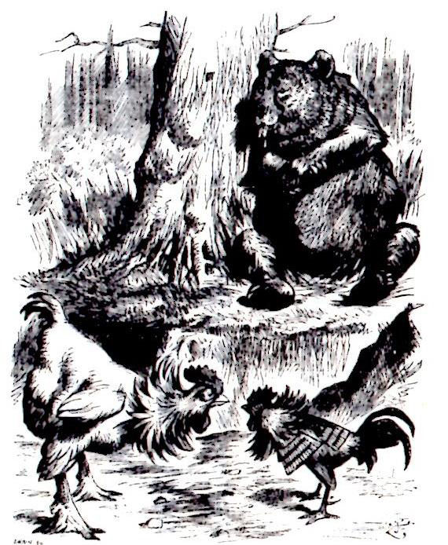
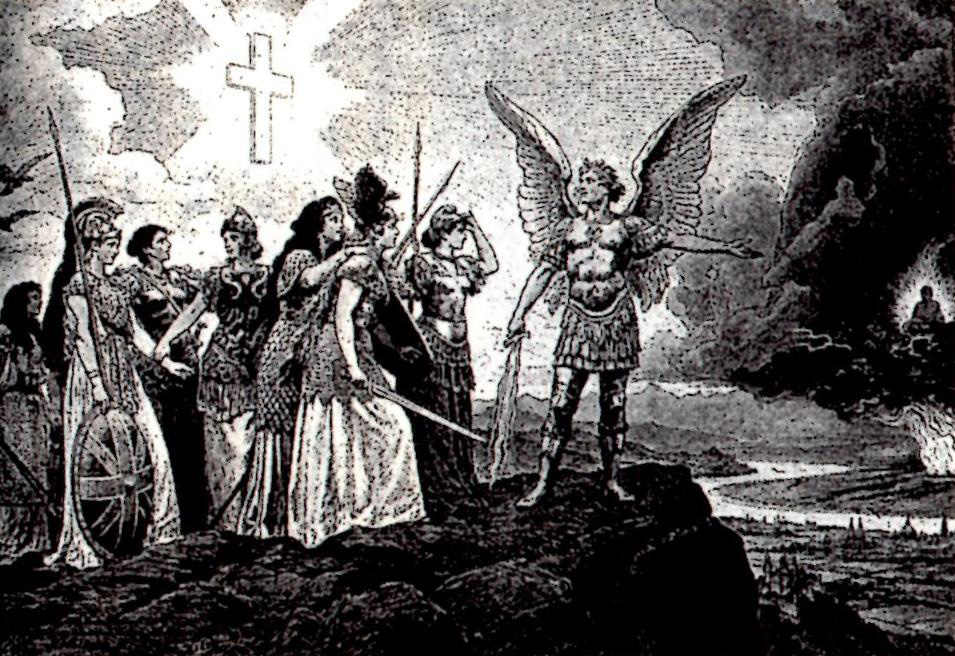
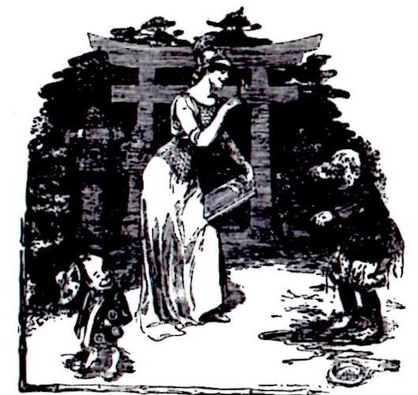
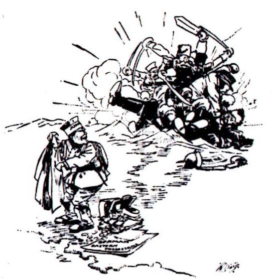
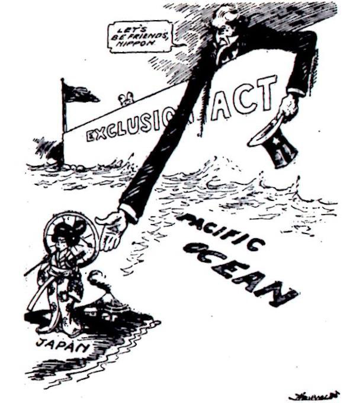
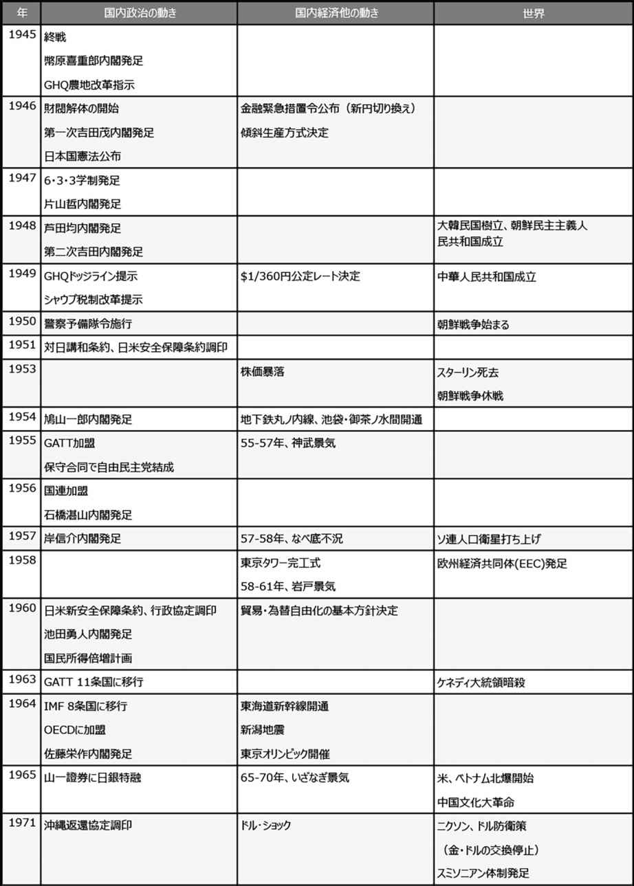
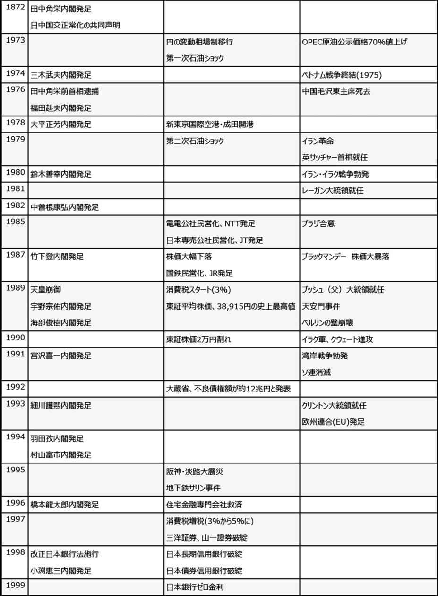
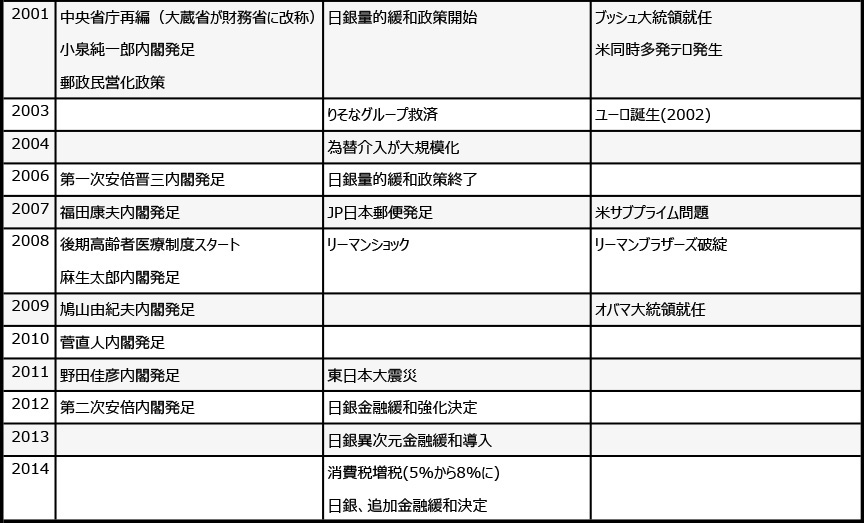

| [明治150周年記念] 名著から問題を読み解く! 明治から日本の未来を考える (9) 明治とその遺伝子[1] (impress QuickBooks) | |
| 平田 周三 | |
| 株式会社インプレス (2018) | |
目次
入江 昭 著
三谷太一郎 著
南博 著
飯倉 章 著
野口悠紀雄 著
日本の外交
明治維新から現代まで
入江 昭 著
東洋経済新報社
1966年9月
ISBN：9784121001139
目次紹介
序章 大国日本の苦悩
Ⅰ 近代日本外交の源流
Ⅱ 帝国主義国家日本の誕生
Ⅲ 大陸国家への道
Ⅳ 転換期の日本外交
Ⅴ 新秩序への模索
Ⅵ 日中戦争の思想
Ⅶ 太平洋戦争への道
Ⅷ 日米戦争から日米安保まで
終章 外交とは何か
原著者紹介
入江 昭 (いりえ・あきら)
入江 昭 氏は、ハーヴァード大学歴史学部名誉教授。成蹊高校(東京)を卒業後、1953年財団法人グルー基金奨学生として渡米。ハヴァフォード・カレッジを卒業、1961年ハーヴァード大学大学院歴史学部を修了しPh.D.取得。カリフォルニア大学助教授、ロチェスター大学准教授、シカゴ大学教授を経て、1989年ハーヴァード大学歴史学部教授、同大歴史学部学部長に就任した。国内でも、早稲田大学、立命館大学、関西大学の客員教授として教えた。2005年瑞宝重光章。吉野作造賞及び吉田茂賞を受賞している。
1960年代より、高坂正堯 ・永井陽之助ら現実主義の論客と共に『中央公論』誌上などでの国際政治評論でも活躍した。入江氏の歴史学は、思想・文化の影響力を重視するアプローチが特色であり、一国の外交史研究を超えた多国間の視点とその相互作用を考慮した。1934年(昭和9年)東京生まれ。
多くの英文和文の著書があるが、主著に『新・日本の外交』(中央公論社)、『平和のグローバル化へ向けて』(日本放送出版協会)、『二十世紀の戦争と平和』(東京大学出版会)、『歴史を学ぶということ』(講談社)、『グローバル・コミュニティ』(早稲田大学出版部)、『After Imperialism』(Harvard Univ. Press)、『Pacific Estrangement』(Harvard Univ. Press)、『The Origins of the Second World War in Asia and the Pacific』(Longman)などがある。
要旨
本書は、明治維新から現代(ヴェトナム戦争)までの日本外交の歩みを鋭い分析でわかりやすく解説する。
起きた事件の羅列ではなく、帝国主義、アジア主義といったテーマごとの説明でもなく、近代日本の外交を支配した原理を究明し、それぞれの時代の政治家や日本人が抱いていた思い(理想)と日本が置かれていた国際情勢によって起きる現実とのギャップに注目しながらその足跡を追う。
近代日本の外交には、目の前に現れる問題の解決に注力し、抽象的な思想(理想)が欠如しており、国防と経済的発展しか外交の基礎になかったと指摘する。
外交は欧米列強との調和を主眼としていたが、軍部は、欧米の批判を知りながらも大陸膨張を強行した。しかし、軍部の中でも、ロシアを恐れる陸軍と、アメリカを仮想敵国とみなす海軍とで考えが違っていた。
大きな転機となったのは、日露戦争後の世界秩序の変化だった。日本はドイツ地勢学的理論の世界4ブロック(欧州、アメリカ、ロシア、アジア)を根拠に、それぞれの地域に指導的立場の国が支配するという構図を描いて外交政策を考えたが、実際には、資本主義対共産主義、自由主義対全体主義といった世界的対立が主体となって歴史は動いた。
国内にアジア主義が台頭してくるが、欧米との関係を心配する意見がこれを阻み、アジア主義もまた中国で起きていたナショナリズムを軽視してしまった。
結局日本の外交は、明治維新以来、国土の安全と貿易の進展のみを目標に進められ、国家として生き残るには大国をめざすほかになく、大陸、そして資源を求めて東南アジアに進出して、アメリカと衝突することになるのである。
コメント
歴史というと、どうしても起きたいろいろな事件を中心にその原因や背後関係を説明することになるが、本書は、明治の始まりから太平洋戦争の敗戦後に至るまでの日本の近代を、日本を取り巻く国際関係を視点に、日本が進めてきた外交の軌跡をたどり、何が日米衝突に至らしめたかを明瞭に説明する。立ちはだかる問題にその都度現実的な答えを出すが、この国をどのような方向に進めるべきかという思想、世界観が曖昧になるのは、今日の政治にも残っているのではないか。「日本の外交は無思想である」という入江昭氏の指摘は重く響く。
本書は1966年に書かれ、ヴェトナム戦争の終結、ソ連の崩壊、中国の経済発展はまだ実現していない。それだけに入江氏の史観がその後の展開にどのようにつながるかを考えるのは別の意味で興味深い。本書の続編として、『新・日本の外交』(中央公論社1991)が参考になる。
以下の縮約では、本シリーズの目的から、日露戦争後から太平洋戦争開始前までを取り上げた。
縮約
１．日露戦争後の世界情勢の変化
1910年代(明治43年～大正8年)は、日本をとりまく周囲の情勢がいちじるしく変化し、国際問題についての考え方にも大きな変動がみられた時期である。これは日本だけではなく、各国が直面した問題だった。しかし、日本の外交は相変わらず現実的、機会主義的であり、新しい情勢が発生するたびに、その事態に応じて政策を立てるが、全体としての統一を欠き、刻々と変化する世界情勢を把握すべき根本的思想を生むにはいたらなかった。しかも、このような事態の中で日本のとった行動が、さらに新しい反応を諸外国によびおこし、それがまた日本に問題を提起するというような連鎖反応が続いた。
当時の世界情勢をみておこう。
中国
中国では、1911年に辛亥革命が起こり、清国が瓦解し、袁世凱が全国統一をめざすが、頼みとする外国の政治的、財政的援助が、列国間の政策不一致のため期待はずれとなり、中国は事実上いくつかの地方政権の支配するところとなった。しかし、中国の政治的弱体化とは別に、ナショナリズムの波が中国全土に広がっていた。このナショナリズムを推進する世論を基盤にして、中国の外交思想には政治的混乱とは対照的に一つの統一性、方向性が生じていた。
第一次世界大戦と西洋の没落、そしてアメリカの台頭
辛亥革命と時を同じくして、バルカン半島をめぐる国際関係は緊迫化し、ついに1914年8月、第一次世界大戦が勃発し、ヨーロッパ列強は戦争のるつぼに巻き込まれた。参戦したアメリカは、戦後の世界に対する発言力を増し、世界で最強の最も豊かな国となっていった。一方、戦いに疲弊したヨーロッパは、これまでの優越感を喪失、各地で革新運動が勢いを盛り返した。人民のための外交、民主的な勢力の結集による平和の維持、領土拡張への反対といった新しい思想が指導層に圧力をかけはじめていた。こうして「西洋の没落」という悲観論が広がるとともに、新たな世界観や国際問題についての考え方が模索されるようになった。
ロシア革命の影響
第一次世界大戦に端を発したロシア革命は、当時の国際関係や思想界をさらに混乱に陥れる作用をした。1917年のロシアにおける10月革命は、外交思想上に大きな影響を与えた。モスクワの革命政権は、レーニン主義を根拠とする新しい外交をくり広げ、世界各地に社会主義革命を起こし、真の社会正義にもとづく平和が到来するよう運動すべきだと、先進国家内の革命的階級や、植民地の反封建階級に訴えた。一方、各国の知識人や労働運動者の中には、この新しい革命理論と外交思想を受け入れるだけの地盤がすでにできていた。かくて、世界は帝国主義陣営と反帝国主義陣営とに二分された。このような考え方がアジアに甚大な影響を及ぼしたのは当然だった。
ソ連の「新外交」に呼応して、アメリカにも「新外交」が芽生えた。タフト大統領は道徳外交を開始し、いつまでも過去のドグマのとりこになるべきでないと、日本の中国における特殊権力を批判し、ウィルソン大統領はさらにこれを押し進めた。アメリカの理想、義務とは、人類の平和、正義、自由を守ることだと宣言した。
２．アジア主義と親米主義
アメリカの理想主義との対決
ウィルソンの理想主義的な外交が鮮明な形で現われたのが対中国政策だった。ウィルソンは、中国の近代化をアメリカの手によって助け、中国が日本の支配下に置かれることを阻止する政策を掲げた。このアメリカの新たな外交思想を、中国のインテリや官僚の多くが歓迎した。アメリカの理想主義と中国のナショナリズムが結びついて、日本の大陸政策に挑戦してきた。
このような新情勢に対して、日本の対応の仕方は全体として統一性を欠き、生ずる新事態に応じてそのつど政策を立案するという性格のものだった。軍事上の国土安全と経済的発展が日本外交の理念ではあったが、変転する世界情勢の中で、どのように対応していくかについての元老、軍、政府指導者たちの議論は、大部分が旧来の枠内にとどまり、諸外国の新しい潮流の認識の上に立つ、包括的な外交思想は生まれてこなかった。
軍部の反応
辛亥革命に際して、陸軍は清国動乱を勢力発展の好機とみた。一方、それまで中国大陸への発展に消極的だった海軍だったが、中国をめぐる日米関係の悪化にともない、日本の安全と利益の確保のためには、西太平洋と東アジアにおいて確固たる足場を築くべきだとする考えが強くなった。
1914年、ヨーロッパ大戦が勃発するや、日本の軍事政策はさらに具体的、積極的となり、中国や太平洋におけるドイツの領土を占領した。海軍は、アメリカを仮想敵国として、西太平洋における優位の確立をめざすようになり、日露戦争以来の懸案だった八・八艦隊の建造計画(戦艦8隻、巡洋戦艦8隻)が具体化した。
1917年末、ロシアでボルシェヴィキ政権が成立すると、ロシア内部の不統一、治安のびん乱に乗じて、日本陸軍は、満州、沿海州、東部シベリアなどを含む地帯をソ連および中国から切り離して、一種の中立緩衝地帯を作り、それによって日本領土の安全をはかろうという考えを編み出した。海軍はアメリカによるシベリア支配をくいとめようとした。
経済的には不可欠だった日米友好
日露戦争後の不景気から立ち直れないでいた日本経済は、第一次世界大戦でヨーロッパ諸国の輸出力が低下したため、その隙に乗じて日本は中国などへの輸出を拡大し、好況に転じた。世界大戦中に、日本の対米輸出は4倍に増えた。軍事上における日米関係の緊張とは対照的に、経済では緊密度を高めていた。アメリカと日本の密接な経済関係が最も重要と考えていたのは、政友会の原敬 や、当時の外務省内の幣原 喜重郎 などだった。首相になった原は、経済主義的な外交方針を進め、国際的共同政策をめざした。
かくして、対米関係では、日本の軍事と経済政策の間には深い溝が生じていった。日露戦争までは、日本の軍事政策と経済政策の間には深刻な対立はなく、日本の近代化、帝国主義国化をめざすという根本外交理念が存在していた。
アジア主義か、欧米列強との協調か
1910年代のもう一つの特徴として、アジア主義的な思想と、東西協調的な思想の鋭い対立があった。アメリカにおける排日運動や、ウィルソン大統領下の対日政策、袁世凱政権に対する列国の姿勢など多くの事実は、一部日本人に、東と西とは根本的に異なるものだという意識を強め、日本自身の手で、アジアを白人の支配から解放し、「アジア・モンロー主義」を実行すべきだという考えも出てきた。
これは、西洋による日本圧迫という心的現象と、日本のアジアへの進出という政策が結合したものである。日本ではアジア主義が大陸進出正当化の根拠として使われ、当時の人びとにはこの理論はきわめてアピールするものを持っていた。パリ平和会議(1919年)で、日本が提出した人種平等についての提案が破れたことは、今まで日本人の抱いていた東西対立の観念が正しかったことを証明する材料になった。
アジア主義的な外交思想が高まる反面、欧米列強との協調をいぜんとして日本外交の基調とすべきだという考えも続いて存在した。外務省一般の考え方は、やはり西洋諸国との理解、提携の下に、中国その他の地域で日本の権益を守っていこうというものであり、アジア主義をかざして日本独自の道を歩んでいこうとする軍部の行き方と対立していた。ましてや日中提携を基底とする排他的アジア主義には、外務官僚は大部分が反対した。しかし、帝国主義外交時代の原則を引き続き応用していこうとする考えは、アメリカやソ連が打ち出した「新外交」時代に通じるものではなかった。
19世紀的な強大国間による外交にかわる、道義的、平和的な国際関係、さらには個人主義的、立憲主義的な国内政治の展開の時代が到来したことを、世界史的な現象としてとらえようとする吉野作造の意見など、新しい国際関係を作り出す努力が示された。
このような世界の大勢を敏感に感じとっていた政治家には、パリ平和会議に出席した首席全権の西園寺 公望 や牧 野 伸 顕 がいた。牧野は、正大公明を旨とし、正義人道を重んずる新外交方式こそ、「世界の思潮」であるとし、日本の将来もこの風潮と軌を同じくすべきであると論じた。しかし、当時の日本政府には、新しい外交方式を採り入れるだけの準備はできていなかった。
欧米協調主義の1920年代
第一次世界大戦(1914年)を中心とする1910年代は、従来の帝国主義的な固定観念が崩れ、新しい考え方が各地に出現した時期だった。しかし、日本ではいぜん伝統的な考え方から脱することができないでいた。1920年代は、世界とのギャップを埋めることを模索する時代となった。
1920年代の外交は、幣原喜重郎という一人の外交家の存在に象徴される。幣原は、原敬内閣(1918～21年)のとき、外務官僚として腕をふるい、1924年～27年、1929年～31年、計5年以上にわたって外務大臣として日本外交を指導した。
幣原は、軍部による西洋無視の拡張政策に反対し、列国協調主義に立っていた。これだけでは帝国主義諸国間の調和や理解を保っていこうとする従来の外交観念の域を出ないが、ワシントン会議(1921～22年)によって、世界は新しい時代を迎えていた。幣原は、「ワシントン体制」をもって日本の進路の道標とするようになった。
「ワシントン体制」とは、ワシントン会議によって作られた諸条約や協定の全部を指す名称であるが、とくに重要なものは、日英米仏伊5カ国の海軍力を一定の保有量以下に限った5カ国条約、日英同盟を廃棄して作った日英米仏間の協議協約(4カ国条約)、中国についての領土保全や門戸開放を新たに法文化した9カ国条約などである。日本はこれらの条約に署名し、日本全権の一人として会議に参加した幣原にとって「ワシントン体制」は彼の思想的出発点になった。
日本にとって、ワシントン体制は、軍備拡張の中止による経済効果に期待できるほか、貿易面でも日米の緊密化は有利であり、アメリカとの衝突を避けるためには最善の策であった。幣原がなによりも重視したのは、経済発展政策だった。経済力こそが国力の源だと考えていた。その意味では、満蒙の重要性を否定するものではなかった。
しかし、軍部は幣原の外交を否定した。日本の安全はワシントン会議によって保障され、日米、日中、日ソ間の戦争はありえないとする幣原の考えを、現実を無視した夢想論にすぎないと批判した。それでも幣原は、自分の考えを貫いた。中国について、内政不干渉政策をとり、諸外国と協調をとりながら、中国における貿易と投資の増進をめざした。
しかし、幣原外交は破産することになる。アメリカ議会で排日移民法が成立(1924年)、これを静観することにした幣原に対し、対米追従主義者という非難が向けられた。欧米各国でも、平和主義の理念は徹底されず、日本と同様、軍部の考えとのギャップが生じていた。なによりも打撃となったのは、1929年にアメリカを起点として起こった世界恐慌だった。国際的相互依存性を想定した経済主義を破綻に導いた。国家経済利益の追求と、国際協調とのあいだのつながりがなくなり、経済外交を推進する外交家は、その立場を正当化すべきなんの成果も示すことができなかった。
こうして武力による満蒙支配を主張した軍部の計画が、現実味を帯びてきた。
３．中国をめぐる判断
満州事変
幣原外交に代表されるような思想と対立して、関東軍は軍事行動に出た。幣原の国際平和外交、経済優先を、軍部は非現実的だときめつけ、国防第一優先を主張した。幣原外交が拠り所とする条件は、内外ともに実現することが難しかった。幣原に対する批判は優勢になり、そして満州事変が、軍事思想の優位をもたらした。国防というものがドイツ流に拡大解釈され、日本がアジアを守ることも意味するように変わっていく。満蒙を日本が手に入れることは、資源の確保という点で経済問題も同時に解決できると主張された。
軍部の統一構想の欠如
満州事変によって軍事的に満蒙を確保できたが、その後の経営をどうするかについての戦略はなかった。満州における実力行使は英米ソなどを刺激したし、中国内での抗日運動もよび起こした。しかし、米中ソの3国すべてを同時に戦うことはできない。ではどこを相手として国防に備えるか。結果論的にいえば、日本の軍部はこの問題をつきつめて検討することを怠り、統一的な軍事計画の作成をしなかったのである。
海軍はいぜんアメリカを仮想敵国とみなし、ワシントン、ロンドン両条約の枠に拘泥せず、アメリカの海軍力に勝るものを西太平洋で築きあげようとした。そして、やがては南支那海から東南アジアにかけての制海権をにぎろうというのが、海軍からみた国防論であった。中国には介入しないというのが海軍の考えだった。
ところが陸軍は、主として対ソ戦に備えようとしており、そのためにはアメリカとの対決は避けるべきだとした。一方中国については、現地にいる陸軍、つまり支那駐屯軍と関東軍は、1935年以後北部中国で謀略をはじめ、北部中国を国民党政府の支配外に置くことで日本の満蒙における地位を確保し、あわせて東アジアの反共、反ソ体制を形成しようとしていた。
諸外国の対応
このとき日本の外交は、問題が起きるたびに現実的に対応を考えるというその場主義に終始し、事の正当化を図るだけだった。国防観念以外には、基本的な思想背景は確立されていなかった。
政府は、アジアの治安を維持するのは日本の任務であるとする考えを基礎に、列国協調を建前とするアジア主義的な思想が復活したかに見えるが、実際には、満州事変の既成事実を正当づけるための論理にすぎなかった。
1935年頃になると、中国の国民党政府とのあいだで、中国における排日の停止、満州国の承認を前提に、共同して防共にあたるという反共主義の考えが国策として取り上げられるようにった。これは、共産主義との対決という思想的信条よりは、ソ連の軍事強化、中国国内における国共合作の動きを牽制しようとしたものだった。1935年8月、中国共産党は国民党政府に対し、抗日民族統一戦線の形成を提唱した。
満州事変以後の日本の対外関係には、アジア主義や反共主義思想が表に出はしたが、これは主として既成事実を正当化するためのイデオロギー、あるいは現実の国防問題を処理するうえでの主義であり、根本的には、軍事行為がもたらした諸変化に対応するものだった。
決定的な対決を避けた諸外国
東アジアにおける日本の軍事行動が、諸外国の強い反対を招くことなく、進行していった背景には、このような事態を許すような国際的環境があったからにほかならない。
各国にとって、日本の満蒙進出を実力で阻止しなければならないほどには、安全や経済利益が脅威にはなっていなかった。ソ連は国内工業化を先決とし、満州での日本軍との衝突を避けようとしていた。日本の中国支配をまっこうから反対する態度に出るのは1935年以後である。
イギリスは、東アジアにおける国策は主として経済中心であり、日本とのいざこざに巻き込まれることは望まず、中国の財政再建の援助にとどまった。アメリカは、はじめのうちこそ日本の侵略を非難し、国際連盟を通じてなんらかの制裁を考えていたが、日本を相手にまわして戦うほどには、極東問題を切実なものとは考えていなかった。
各国とも、国内の経済問題に関心が集中しており、日本の進出の程度いかんによっては実力に訴える必要があるかもしれないと考えられたものの、当分のあいだは、各国それぞれの軍備の充実が優先されたのだった。
このように、日本の行為は必然的に各国の反応を呼び起こしはしたが、諸外国が積極的に東アジアに介入し、日本を牽制するには至らなかった。ヨーロッパでは、イタリアによるエチオピア攻略、ドイツのラインランド進駐、スペイン内乱などが起きていたが、これらについても英米仏は消極的態度に終始していた。ヴェルサイユ体制の崩壊に対処すべき新しい外交の様式が生み出されていなかったのである。したがって、極東の危機を国際的な視野からとらえようとする動きが生じなかった。
日本は東アジアの孤立を軍事的に利用できる環境が存在していた。
しかし、1930年代になると、世界が帝国主義の時代から脱却して新しい時代の秩序が始まった。その後を追って日本は新たな方向に向かって走り出す段階になっていた。考えれば、その始まりとなった1931年は、ペリー来航から80年足らず、日本が列強として国際舞台に出現してから20数年にしかなっていない。あまりに急激な変化だった。明確な外交思想がないまま、国際関係の隙間をぬって勢いのまま突っ走る結果となったのも仕方がなかったのかもしれない。
４．日米戦争への道
急激な世界情勢の変化
1937年7月に起きた盧 溝 橋 事件は本格的な日中戦争へと発展していった。満州事変以後の既成事実を前提として東アジアの政治体制を築きあげようとする日本と、この既成事実を認めない中国とのあいだの衝突だった。それまでは、アメリカは日本と中国のあいだにあって中立を守っており、貿易では自由な関係を保っていた。中国は、アメリカのこのような態度に批判的だった。日本は、アメリカが中国を軍事的に援助するとは考えていなかった。
ところが、わずか1、2年のあいだに情勢は一転した。アメリカが東アジアに積極的に介入し、中国に対する政治的、経済的援助を始めたのである。一方日本の行為に対し制裁手段をとった。中国国内では、国民党も共産党も、アメリカの新政策を歓迎し、日本の侵略に対抗する米中、あるいは米中とソ連の共同戦線というイメージを作りあげていった。
日本においては国際的孤立感が強まり、中国のみならず、米英やオランダまでを相手に戦うことになった。この急激な変化は、日本国内に原因があったが、国外的にもそのような状態を可能にする国際環境が生まれていた。
1937年11月、ドイツのヒットラー政権は東欧侵攻の具体策を採用、翌年から着々とその計画の実行にかかった。1939年にはソ連と不可侵協定を結んでソ連の中立化をはかり、9月にポーランドに侵入して第二次世界大戦の火ぶたを切った。1940年春にはフランス、オランダ、ベルギーなどがドイツ軍の犠牲となり、同年末にはイギリスのみがドイツに抵抗し続けている状態だった。
ところが1941年春、ドイツは不可侵条約を破ってソ連に侵入、戦線が拡大。しかも、アメリカが英ソ援助の方針を決定したため、ドイツは米英ソの強国を相手に戦うことになる。
このような情勢は、東南アジアにおけるイギリス、フランス、オランダなどの植民地に多大な影響を与えた。母国の降伏は仏印(フランス領インドネシア、今日のヴェトナム、ラオス、カンボジアの地域)や蘭印(オランダ領インドネシア、東インドネシア)の支配体制を弱体化し、イギリスも全神経をヨーロッパにおけるドイツとの決戦に集中していたため、シンガポール、ビルマなどの植民地や、オーストラリア、ニュージーランドなどの自治領の防衛は手薄にならざるをえなかった。
アメリカのアジア戦略
アメリカとしては、イギリスの崩壊を放置するわけにはいかなかった。そのため、アジアにおけるイギリスの植民地を死守する必要があり、日本が東南アジアの植民地を侵略せぬよう、日本を中国に釘づけにしておくため、中国への軍事、経済援助を開始し、原料などの対日禁輸を断行し、アメリカ海軍の主力を太平洋に配置して、日本を牽制しようとしたのである。
1937年の時点では、日米貿易はさらに拡大していたし、日本も南進方策を具体化していたわけではなかった。しかし、1938年に入り、情勢に変化が起きた。ヨーロッパでイギリスが苦境に陥り、アメリカのアジア政策が積極化し、日本国内でもアジア新体制論が台頭して、南方進出への素地ができたのである。
アメリカはヨーロッパとアジアに危機感を強めた。1938年以降、アメリカは中国に対する借款のほか、対日禁輸リストの品目を増やし、対日通商条約を一方的に破棄するなど、石油や鉄類の対日輸出をいつでも阻止できる体制を整えていった。日本にとって、アメリカからの輸入が途絶えた場合、石油やゴムなどの供給源を確保するためには、南進が不可避だと考えられた。アメリカからの輸入を確保するには、日本のアジア政策を変更することが条件になり、それを諦める場合は南進が不可欠となり、アメリカとの戦いは避けられない。日本は窮地に立った。
しかし、日本にとっての不幸は、このような重大な外交問題について、日本の指導者が徹底的な研究、検討を怠り、国策の決定をそのときどきの情勢の推移にまかせたことだった。そのようなあいまいさの中で、三国同盟によって表されるような狂信的なイデオロギーが力をふるった。それでも日本政府は、比較的慎重な外交方針を守り、アメリカとの関係の調整に努め、なんとかして日米貿易を正常化させようと努力した。
ここで問題となるのは、国際情勢の判断の甘さで、アメリカは一旦硬化した対日政策を簡単には改めようとしなかったし、日本は日本で、ドイツがイギリスに対しても本格的戦闘を開始して、いまにもドイツが西ヨーロッパで完勝するかのような印象を持った。
東亜共栄圏思想
「東亜新秩序の建設」という構想は、世界は欧州、ソ連、アメリカ、アジアの4ブロックに分かれているというドイツ地政学的な理論を前提に、アジアでは最も進んでいる日本が中国の国民党政府と提携し、欧米の植民地と化しているアジア諸国を開放し、域内の経済を発展させ、平和的な秩序を構築するという構想である。この考えは、日本国内の知識層も支持する考えとなっていた。
しかし、現実的には、ソ連は社会主義を全世界にひろめる野望を持っており、アメリカがあっさりとアジアを手放すはずもなく、また中国国内のナショナリズムが日本主導の秩序を受け入れるわけもなく、まったく日本の一人よがりの構想にすぎなかった。
日独伊三国同盟
1940年前半は、日本は米内 光政内閣のもと、アメリカを仮想敵国とした日独同盟には反対し、アメリカとの衝突は避けるべきと考えていた。しかし、同年7月、第二次亜近衛 亜文 麿 内閣が形成されると、ドイツとの同盟が日本外交の基調となった。
第二次近衛内閣の外相松岡洋右 は、東亜新秩序を樹立して、アジアにおける日本も政治的、経済的優位を確立するためには、列国にこれを認めさせることが必要と考えた。そのためには、まずドイツと組んでその承認をうることが先決となり、さらにソ連の了解をえて、その勢いでアメリカと対決し、日本の毅然たる態度をもってアメリカの対日政策を改めさせ、それによって日米の衝突も避けようという戦術であった。
しかし、日本軍が南部仏印やシンガポール、蘭印などを攻略すれば、アメリカは実力介入するだろうと懸念されていた。対米戦も辞さない覚悟で南進すべきか。しばらく情勢を静観して、外交手段によってアジアにおける日本の指導的地位を確立すべきか、選択を迫られていた。陸海軍の中堅層は前者の考えに傾いており、一方、松岡をはじめ政府首脳は日米関係はいぜんとして調整の余地があるものと信じていた。
これに対してアメリカの政策は、1941年前半期においては、まだ徹底した対日制裁は決定していなかった。アメリカとしては、ヨーロッパとアジアの両面戦争を同時に行う自信はなく、当分のあいだは大西洋に力を集中してドイツのイギリス制覇を食い止めなければならなかった。
どうすれば対日戦をひき起こすことなしに、日本の南進を阻止できるか、苦心していたのである。つまり時をかせぐのが最善の策だとされた。同時に、中国への援助を継続して日本を大陸に釘づけにすること、米艦隊の大半をハワイの真珠湾に集中し日本海軍を牽制する方針がとられた。
日米関係が最後の危機の段階に入ったのは、6月22日のドイツ軍によるソ連進撃からだった。独ソ中立の破棄が、松岡構想をくつがえすものだったにもかかわらず、日本は南進政策を実行に移し、南部仏印まで兵を進めた。
アメリカは、即刻報復手段に出て、在米日本資産を凍結し、石油その他の軍需物資の輸出を禁止した。アメリカからの輸入が止まれば、日本はそれら必要な資源を東南アジアに求めるほかない。しかし、そうすればアメリカとの衝突は必至である。日本としては、断固南進するよりほかなかった。戦いとなれば、まず機先を制して真珠湾に集中している米艦隊を攻撃するのが一番効果的である。
かくして日米戦争は始まった。
５．結語
日本外交の伝統的態度
明治以来百年近く、日本の外交がほとんど常に現実的、実際的であり、刻々と変化する国際情勢にそのつど対応していき、その場合国土の安全、貿易の進展という、軍事経済両面でのナショナル・インタレストが、日本の外交思想の枠を作っていた。西洋諸国のような、宗教的、人道主義的、理想主義的な思想という裏づけになるものが、日本の外交にはなかった。
ときどき現われたものに、東と西のあいだの日本という概念が民間にあった。アジアの中の日本、進出する西欧に対抗するアジアの指導者としての日本、という考えを抱いていたが、政府はこのような東西対立意識を持たなかった。
アジア主義的思想が日本外交の裏づけとなるのは1930年代であり、大東亜共栄圏の概念にそのクライマックスを見出した。しかし、それも大部分日本の軍事的、経済的策略を合理化せんとするものだった。
新外交思想の台頭
二十世紀初頭になって、西洋における外交思想に新しい動きが見られるようになった。一つは西洋の優位に挑戦するアジアというものを想定した黄禍論であり、一つは中国に勃興しつつあったナショナリズムに対する同情的な見方であり、さらにもう一つは、とくにアメリカにおいて顕著な道徳主義的外交観である。これらのことが、旧来の軍事、経済政策に終始していた日本に多くの問題を提起することになったのである。
かくて、明治以来日本人が意識的に西洋化したという事実、アジアで最初の強国、帝国主義国となったという意識、そしてそれがゆえに西洋の猜疑心、恐怖心を助長し、西洋によって完全に平等視されていないのではないかという不安、こういったものが、いわば明治外交の心理的蓄積となり、思想的遺産となった。
今後の日本がめざすべき外交
大正、昭和前期の日本人は、アジア主義の思想を追求し、不成功に終わった。もっと具体性のある、しかも生きた思想として、国防、経済発展に加えて、日本外交の三つ目の柱になるものはないか。
日本人が自分たちの安全と繁栄のほかに、世界の中の一国としての生きがいを感じ、自らを捧げることのできるような理想はないだろうか。従来の理想主義はあまりに自己中心的、あるいは観念的、排他的であった。同時に国際環境に恵まれていなかったために、日本が外交思想を十分発達させえないこともあった。今後望まれるのは、日本人をして新しい外交の思想を展開させうるような国際環境であり、そのような環境を作るべく日本人が努力することである。とすれば、より貧しい国、より未開の国の人びとを助け、人類の福祉に貢献するのが最善の道であることは明らかであろう。
日本の近代とは何であったか
問題史的考察
三谷太一郎 著
岩波書店
2017年3月
ISBN：9784004316503
目次紹介
序章 日本がモデルとしたヨーロッパ近代とは何であったか
第１章 なぜ日本に政党政治が成立したのか
第２章 なぜ日本に資本主義が形成されたのか
第３章 日本はなぜ、いかにして植民地帝国となったのか
第４章 日本の近代にとって天皇制とは何であったか
終章 近代の歩みから考える日本の将来
原著者紹介
三谷太一郎 (みたに・たいちろう)
三谷太一郎氏は、東京大学名誉教授。専門は日本政治外交史、特に大正デモクラシー期の日本政治史研究で知られる。東京大学法学部学部長、東京大学大学院法学政治学研究科研究科長、成蹊大学特別任用教授などを歴任した。この間、コロンビア大学東アジア研究所(1969-70年)、ハーヴァード大学東アジア研究所(1970-71年)、オックスフォード大学セント・アントニーズ校(1980年)、ロンドン大学東洋アフリカ研究学院(SOAS・1980年)の各校で在外研究を行った。1936年、岡山県生まれ。
主な著書に、『日本政党政治の形成―原敬の政治指導の展開』、『新版 大正デモクラシー論―吉野作造の時代』、『政治制度としての陪審制―近代日本の司法権と政治』、『ウォール・ストリートと極東―政治における国際金融資本』、『学問は現実にいかに関わるか』、『人は時代といかに向き合うか』、『戦後民主主義をどう生きるか』(以上、東京大学出版会)などがある。
要旨
「近代とは何か」。その定義をまず、ウォルター・バジョットの理論「議論による統治」を根拠にする。バジョットは、「慣習の支配」である「前近代」から「議論による統治」への移行が近代化だとした。また、その移行を実現する要因として「貿易」と「植民地化」をあげた。本書は、このバジョットの「近代」概念に照らして、幕藩体制から昭和に至る日本の近代化の過程と特質を解き明かす。
わが国では、徳川幕府の時代から、幕政、藩政には合議でものごとを決める体制が確立されており、近代を表わす「議論による統治」の基礎は明治維新前から存在していたことを指摘する。その精神と制度は明治憲法に引き継がれ、分権体制が確立され、議論の主体であるべき帝国議会が制定され、政党がその主体を占める。分権体制を統合する力の所在の問題とからませながら、政権が藩閥の時代を経て政党を母体とするようになっていく経緯を説明する。
バジョットがあげた「貿易」のことは、概念を拡げてわが国における資本主義の成立過程とその特色について検討し、明治初期は不平等条約のため外資依存が不利なことから自立的資本主義からスタートし、日清戦争を機に外債発行が増加、日露戦争に戦勝して国際金融資本の時代が到来するも、やがてワシントン体制が崩壊した後は、排外的資本主義へと進み、太平洋戦争へと至る。
バジョットは、近代化の過程に「植民地化」を提起した。欧米先進国はみな植民地を所有していた。しかし、その目的は領土統治ではなく、経済発展にあり、日本が国防を目的とし国境と接する植民地を形成していったのとは顕著な違いがあった。軍時中心の植民地支配は、中国、朝鮮国内にナショナリズム運動の高まりを招き、欧米がそれを支援したため、日本は孤立を余儀なくされていく。植民地支配を合理化するため、地域主義をかかげ、やがてそれが東亜新秩序建設の思潮へと変わっていった。
最後に、バジョットが問題にしなかった「天皇制」について検討する。欧州の近代化には、道徳の主体としてキリスト教が憲法の中に明確に位置づけられていた。これに代わる道徳主体となるべき「神」をどうすべきか。明治憲法立案者の伊藤博文らは、これを「天皇」と考えた。天皇制を主体とする国体は、日本独自のものとなり、戦後は「神」としての天皇が否定され、今日に至っている。
国際協調、天皇制など、これらの問題は、今日もなお姿を変えながら存続しており、問題は未解決である。
コメント
バジョットが提起したテーマについて、それぞれ歴史的経緯を追いながら、わが国の近代化の特徴を三谷太一郎氏は細かく史実を踏まえながら明らかにしていく。わが国の近代化の母体が、徳川幕府の時代にすでに準備されていたことが理解でき、徳川幕府の時代と明治はその意味で連続していることがわかる。バジョットが近代の本質とする「議論による統治」は、維新以前に不完全ではあるが確立されていた。日本人には、合議でものごとを決定するという精神基盤は古くから存在していたのである。明治は、その上に、形となるべき近代を、ヨーロッパをモデルとして選んだ。
形式として選んだ西洋方式と、古来からの日本的精神との非整合性に、明治以来人々が苦悩してきたことが、本書の説明からわかる。
縮約
１．本書の課題
バジョットの理論
19世紀後半に活動した英国のジャーナリストであるウォルター・バジョット(1826－77年)は、マルクスの『資本論』第一巻が出版されたのと同じ年の1867年に、代表作『英国の国家構造』(The English Constitution)を刊行した。両者とも、政治と経済を相互に密接に関連させて議論したことに共通点がある。
マルクスが経済的な社会構造の発展を自然史的過程として理解しようとしたのに対し、バジョットは同時代の現実を交通通信手段の革命的変化がもたらした新世界として認識した。
バジョットは、「前近代」と「近代」に分け、前者の要素を固有の「慣習の支配」とし、後者の特徴を「議論による統治」とした。この考えをもとに、英国の国家構造は、自由な議論の積み重ねが「議論の統治」を強化し、近代化を実現したのに対し、英国の植民地統治の下にあったインドが「慣習的文明」だとし、世界における西と東の文明的断絶を強調した。
「旧き東の慣習的文明」から「新しき西の変動的文明」への移行が「前近代」から「近代」への移行だとし、西の文明圏による東の文明圏の植民地化を通して世界的規模の移行が実現されるとした。
しかし、同時に、「慣習の支配」の時代は、人類にとって決して失われた時代ではなく、「近代」への「予備的」時代であり、自由と創造性は抑圧されたが、反面で国民国家の基礎をつくった「国民形成」の時代であったとし、「慣習の支配」の変革要因が、もっぱら「貿易」と「植民地化」だと考えた。
本書の課題
本書は、バジョットの「近代」概念に照らして、日本の近代の特質を明らかにしようとするものである。すなわち、「議論による統治」を中心概念とし、「貿易」および「植民地化」を通して、日本が東アジアにおいては最初で独自の「議論による統治」を創出し、また東アジアにおいては最初で独自の資本主義を構築し、さらに東アジアにおける最初の植民地帝国を実現させた日本の「近代」の意味を問う。
２．なぜ日本に政党政治が成立したか
幕藩体制の権力抑制均衡メカニズム
明治国家にとってのアンシャン・レジーム、旧体制である幕藩体制の中に、それなりに明治国家体制の枠組としての立憲主義を受け入れる条件が準備されていたと考えるべきである。それは一種の権力の相互的抑制均衡のメカニズムで、具体的にいえば、幕藩体制における政策決定制度としての合議制があった。
幕府の政策決定に携わる老中は4人ないし5人、若年寄は3人ないし5人、大目付は4人、目付は10人から30人といったぐあいに、それぞれの役職を共同して担当し、これらの複数の要員が合議制を実際に運営していた。
なぜ、この合議制というべきものが幕藩体制の中で準備されたのか。その理由は、おそらく将軍を補佐する特定の人格、または特定機関やそれを拠点とする特定勢力への権力の集中を抑えるためだったと考えられる。
マックス・ウェーバーは『経済と社会』の中で、合議制というのは行政任務の専門化が進行して、専門家の優勢がますます増大していくという傾向に対応して、自己の支配者としての立場を守ろうとする目的意識に適合した典型的な形式だとしている。つまり、支配者は合議制によって、それに参与する専門家たちを相互に競わせ、それを通じて彼らをコントロールする。幕府の初期に成立した合議制もそういうものであったのではないかと考えられる。
福沢諭吉は、幕府体制の持つ政治的特質、とくに権力の分散が制度化されていたという点については、明治国家の立憲主義につながる非常に重要な要素であるということを指摘している。
「将軍の権力も朝廷の為めに平均せられて円満なるを得ず」とし、諸侯の間にもそのような「平均」があったと述べている。老中といえども、実際にコントロールする大諸侯に対しては非常に弱い面がある。「権力平均の一事は数百年来日本国人の脳中に徹し又遺伝に存し、政治社会に円満の得意なきを知らざる者なし」と言い、さらに体制全体についても、「諸侯と公 卿 との釣合を見れば、公卿は位高くして禄少なく、諸侯は禄豊にして位卑 し」と、幕藩体制において権力の配分は巧妙に確立されていたと評価する。
幕末、幕府側も反幕府側も、「公議」、すなわち「パブリック・オピニオン」によって基礎づけられなければならないという共通のコンセンサスがあった。そして、その考えは明治新政府に引き継がれ、1889年(明治22年)に発布された明治憲法(大日本帝国憲法)は、議会制の枠組を定めた。この議会は、その実態から見ても、予算案や法律案について事実上の生殺与奪の権を握っていた。
その一方で、議会制を憲法上の制度とした明治憲法の起草者たちは、議会制の将来に強い警戒心を持っていた。議会制を基盤とする政治勢力の台頭をいかにして抑えるかを考えざるをえなかった。
憲法起草責任者であった伊藤博文は、議会が覇府(旧幕府のような集中権力)であってはならないと、強調した。一見集権的で一元的とされた天皇主権の背後には、実際には分権的で多元的な国家のさまざまな機関の相互的抑制均衡のメカニズムが作動していたのである。
天皇制と藩閥体制
現実的に、天皇は常時、権力を統合する政治的な役割を担う存在ではなかった。内閣総理大臣もまた、閣内および閣外の関係においてその地位はきわめて脆弱だった。閣僚に対する統制力は弱く、議会の支持も万全ではない。このことが明治憲法体制下の日本の政治の大きな特徴だった。
しかし、分権的な体制では、主体的な役割をする者を必要とする。それがいわゆる「藩閥」(かつての反幕府勢力を主導した薩長出身者の集まり)だった。藩閥の代表的なリーダーたちが事実上天皇を代行する元老集団を形成した。この元老集団が分権性の強いさまざまな権力主体間の均衡をつくり出す、いわばバランサーの役割を果たしたのである。
ところが、この藩閥の体制統合機能には非常に大きな弱点があった。藩閥は、分権体制の一つである衆議院を掌握できなかったのである。反藩閥勢力は、全国に広く政党の拠点を設けることができたが、藩閥は母体が長州・薩摩という地方の一点に依存しており、選挙に勝つことは不可能だった。選挙に勝たねば衆議院を支配することはできない。一方、政党にも克服し難い弱点を持っていた。明治憲法下では、衆議院での多数は権力の獲得を保障しなかったのである。
双方の限界を打破するための相互接近が日清戦争後あたりから始まった。藩閥の母体である旧藩は時の経過とともに希薄になり、最終的には母体を失う。超然主義を掲げた反政党内閣論者の伊藤博文が、1900年(明治33年)、立憲政友会をつくり初代総裁となった。これに対立する反政友会勢力は、貴族院を味方にして政党化に踏み切り、立憲同志会に始まり、憲政会、そして立憲民政党にいたる第二の政党の系列を発展させていく。これに伴って、藩閥が担ってきた体制統合の役割は漸次政党に移行していく。
かくして、政党が体制統合の機能を果たすようになった。これが日本における政党制の成立の意味だった。
アメリカも日本と同じ問題に直面
日本以上に厳格な権力分立制を定めたアメリカ合衆国でも、米国憲法の起草者たちが意図したのは、議会多数派による国家支配の抑止だった。そして政党政治は特殊利益が国家を支配すると元来考えられていた。
しかし、アメリカの場合も、日本と同じように、高度に権力分立的な憲法は、それだけでは国家を統治する有効な道具とはなりえなかった。そのため、米国では、大統領制を補佐する何らかの非制度的な主体が必要となり、大統領の選出母体としての二つの全国的政党がその役割を果たすことになったのである。
日米共に、「反政党的な憲法」をつくったにもかかわらず、結局、政党政治が成立した。
「立憲的独裁」
1930年代初頭の相次ぐ内外からの衝撃(満州事変や5・15事件など)によって、政党政治はその権威を揺るがされていき、デモクラシーの危機が叫ばれるようになった。そして、「デモクラシー」なき立憲主義として、「立憲的独裁」という概念が登場する。その提唱者は政治学者・行政学者の蝋山 政道 だった。
蝋山は「立憲的独裁」を欧米先進国間にも見られる共通現象だとし、ドイツにおける大統領の緊急令、英国に出現した「挙国一致内閣」、米国のニューディール政策を例にあげた。「立憲主義」の枠組を前提にしながら、議会に代わって「権威をもって決定しうる組織」(専門家支配の組織)を作り出すための概念だった。
今後の日本の権力形態も、蝋山が提唱した「立憲的独裁」の傾向、実質的には「専門家支配」の傾向を強めていくのではないかと思われる。これに対して「立憲デモクラシー」がいかに対抗するかが問われているのである。
３．なぜ日本に資本主義が形成されたのか
国家的資本主義化への道
国民国家の形成を目的として始まった日本の近代は、自立的資本主義の形成をその不可欠の手段とした。そのことが日本の資本主義を特徴づけることになった。その日本の近代化を方向づけ、それに沿う資本主義の発展を正当化する有力な学説が、19世紀後半の世界を席捲した英国人学者ハーバート・スペンサーの社会学説である。スペンサーは、「軍時型社会」から「産業型社会」へという社会の発展段階の図式を示した。スペンサーの考えは、徳富蘇峰をはじめ多くの明治の知識人のあいだに浸透した。
資本主義勃興期のアメリカでも、多くの指導者がスペンサーに引きつけられた。アメリカではスペンサー理論の自由主義的側面が支持されたのに対し、日本の場合は国家主義的側面が重視された。その結果、内務省を推進機関とする国家主導の資本主義形成が行われ、政治リーダーが同時に経済リーダーとなっていった。
経済リーダーには、大久保利通から始まり、松方正義、高橋是 清 へとつながる薩摩藩の系譜だった(高橋是清は薩摩出身ではないが、文部省で森有礼 、農商務省では前田正名 の薩摩系官僚の薫陶を受け、金融実務上では松方正義に認められた)。
自立的資本主義
明治政府は、関税自主権を欠いた不平等条約の下では、外資導入は不利であり、外資に依存しない資本主義を採用するほかなかった。同時に、自立的資本主義を可能にする客観的条件が日清戦争前の日本にはあった。先進産業技術、資本、労働力、平和の4条件である。具体的には、
(1) 官営事業に象徴される国家による先進産業技術の導入、
(2) 地租をはじめとする安定度の高い歳入を保障する租税制度、
(3) 質の高い労働力を生み出す公教育制度(初等および高等教育制度)の確立、
(4) 資本蓄積を妨げる資本の非生産的消費としての対外戦争の回避、である。
これらの条件下で、大久保利通によって先鞭がつけられた明治国家の自立的資本主義は、消極的外債政策、保護主義的産業政策、対外的妥協政策によって特徴づけられる。
大久保は、非外債政策と積極的産業化政策を同時に進めようとした。大久保の亡き後、非外債政策を継いだ松方正義と、積極的産業化政策を継いだ農商務省の前田正名とは相容れぬまま、松方のデフレ政策により、産業資金の安定した供給源を欠いた積極産業化政策は潰え去った。
日清戦争後の展開
日清戦争後、日本は非外債政策を放棄することになった。それを可能にしたのは、条約改正による関税収入の増大と、戦争の賠償金による金本位制の確立に伴って外債導入を有利にする条件が整えられたからである。このような状況の変化に対応して、日本の資本主義の外資依存度は、外債発行を中心として顕著に増大していった。ここに、日本に国際的資本主義が登場することになった。日露戦争により、その傾向はさらに本格化していく。
国際的資本主義のリーダーたち
日露戦争が開戦されると、閣議は戦費調達のため、2000万ポンドを限度とする外債発行方針を決めた。当時日本銀行の副総裁だった高橋是清が募債交渉と契約締結のため、ニューヨークとロンドンに派遣された。以来3年間にわたる高橋の海外活動において総額1億3000万ポンド(13億円)に及ぶ外債発行が行われた。
もともと松方とともに外債発行には反対の立場だった高橋が、国際的資本主義への発展に導く経済リーダーとなった。高橋の配慮もあって国際金融家として台頭したのが、日銀の営業局長だった井上準之助である。
高橋は、井上を国際金融家として育てるため、異例の人事で理事昇任を保留し、ニューヨーク駐在日銀監督役に転出させた。井上は、この人事に不満だったが、ニューヨーク勤務が国際金融家としての井上の前途を開いた。
高橋と井上にはいくつか大きな違いがあった。高橋は1854年生まれで、薩摩藩派閥と親しかったが、1869年生まれの井上は不平等条約下の自立的資本主義とは関わりがなく、日清戦争後の国際的資本主義からスタートした。
高橋は日露戦争中の外債募集を通してドイツ・ユダヤ系の投資銀行クーン・レーブ商会と親しかったが、井上は第一次大戦に貢献し勢力を強めたアングロサクソン系の投資銀行モルガン商会と強く結びついていた。さらに井上は、中国に対する米英仏日の四国借款団への日本参加に尽力し、欧米の信頼を高めた。そして、日米英の国際金融提携の論理的帰結である金解禁を実現したのが井上だった。
金解禁
浜口雄幸民政党内閣の蔵相として井上準之助は、金解禁政策を実行させたが、折からの世界恐慌と重なり、国内に経済不況を招いたほか、満州事変によって、金本位制を支える緊縮政策の根幹(軍縮)が揺るがされ、結果して井上の金解禁政策は失敗に終わった。
同時に、それを促進した国際金融資本の存立の基盤も揺らぎはじめた。英国も、続いて米国も金本位制を離脱し、世界的な自由貿易の収縮が起こり、各国における国家資本および経済ナショナリズムが台頭した。ここに国際金融家の時代は終わり、国家資本の時代が始まったのである。
1931年、井上を蔵相とする若槻 礼次郎民政党内閣に代わって、犬養毅政友会内閣が発足し、蔵相に就いた高橋是清は、金輸出再禁止を決定した。翌年、井上は右翼テロリストにより暗殺された。井上の没後、財政および経済リーダーとしての高橋の役割は必然的に大きくなったが、それは国際金融家としての高橋の復活ではなく、新しい装いの「自立的資本主義」を主導する国家資本の擁護者としての高橋の登場を意味した。
高橋財政は、ケインズの先駆となるような、公共事業費の拡大や輸出力強化のための積極的支出を押し進めた。しかし、政党政治の復活をめざし、自立的資本主義の復活を試みた高橋も、2・26事件の犠牲となり、その後は戦争体制に従属する資本主義へと変質していくことになる。それは、自立的資本主義から排外的資本主義への転化の過程であった。
そしてその危機は、日本における「議論による統治」そのものにまで及んだのである。
４．なぜ日本は植民地帝国になったのか
日本はアジアで最初の植民地領有国になった
冒頭に述べたように、バジョットは、「貿易」と「植民地化」を「慣習の支配」から「議論による統治」に向かう近代化の変革要因にあげた。確かに、欧米先進国はみな海外に植民地を持った。その意味では、日本もまた、アジアで最初の(そしておそらく最後の)植民地を領有する先進国の一員になったといえよう。
日本が植民地帝国として第一歩を踏み出したのは、日清戦争の前後である。しかし、欧米の帝国主義による植民地化と比べると、日本の植民地化はいささか性格を異にしていた点が指摘される。
当時の日本は欧米諸国との間で未だ大使の交換を認められていなかった。大使の交換は、いわゆる一等国相互間にのみ認められるのが国際慣習だった。日本が欧米諸国との間で大使の交換を認められるのは日露戦争後のことである。不平等条約を国際法的な武器とする「自由貿易帝国主義」は、国際社会の実質的メンバーである一等国にのみ許容される植民地帝国の拡大戦略でもあった。日露戦争の勝利によって日本は国際社会において初めて一等国として認知され、実質的意味の国際社会のメンバーとなったのである。
欧米諸国は、領土確保よりも貿易による経済利益をめざす「非公式帝国」だったのに対し、日本の植民地帝国構想は、経済的利益関心よりも軍事的安全保障の関心から発していることに大きな違いがあった。植民地帝国日本の膨張は、日本本国の国境線の安全確保への関心と不可分であった。本国の国境線に直接する南方および北方地域への空間的拡大として行われた。いいかえれば、日本の植民地主義は、ナショナリズムの発展が帝国主義と結びついたということである。
植民地統治については、文官指揮か軍が統轄するか、葛藤があり紆余曲折があったが、けっきょくは陸軍主導が確立された(台湾の統監は文官を継続)。
しかし、植民地内におけるナショナリズムの高揚による抗日運動が起きるようになり、日本の法律を適用し、日本と同様の教育を行うことをめざすなど、大正後半期には「同化」の政策が行われるようになり、政府担当者は植民地という名称を公式に使うことはもちろん、それを連想させるようなことは避けたいと考えた。第一次世界大戦後の脱帝国主義の世界的潮流の影響を受けていた。
地域主義の台頭
満州事変以降の1930年代になり、日本において国際的地域主義概念が登場してきた。蝋山政道は、もし日本が国際連盟を脱退することがあっても、単なる「国家主義」に回帰することなく、「太平洋における地方的平和機構」や「国際連盟の極東地方組織」のような地域主義に基づく「新国際平和機構」を拠点とするよう主張した。
しかし、このような目的意識をもって導入された「地域主義」は、激変する国際情勢の中で、日本の対外膨張によってつくり出された既成事実を追認し、正当化するイデオロギーとしての役割を担っていった。
日中戦争が勃発し、日本は戦争目的として「東亜新秩序」を唱え、「地域主義」をその根拠とした。当時の「地域主義」論者にとって、彼らが志向した「東亜新秩序」に対する障害は、中国の民族主義と、それを利用する欧米帝国主義だった。
このように、1930年代から40年代にかけて、日本の支配的なイデオロギーとなった「地域主義」は、日本の軍事力によって先導された政治的経済的意味の「地域主義」であって、文化的意味をほとんどもたないものだった。
５．日本の近代と天皇制
ヨーロッパをモデルにした近代化
日本の近代とは、明確な意図と計画をもって行われた前例のない歴史形成の結果だった。そのモデルとされたのがヨーロッパの先進国である。
憲法起草者としての伊藤博文の最大の問題は、ヨーロッパにおいてキリスト教が果たしている「国家の基軸」としての機能を日本において果たしうるものは何か、ということだった。
ヨーロッパ近代は宗教改革を媒介として、ヨーロッパ中世から「神」を継承したが、日本近代は維新前後の廃仏毀釈政策に象徴されるように、前近代から「神」を継承しなかった。
そのような歴史的条件の下で日本がヨーロッパ的近代国家をつくろうとすれば、ヨーロッパ的近代国家が前提としたもの(キリスト教的道徳の根拠)を他に求めざるをえない。それが神格化された天皇であった。天皇制はヨーロッパにおけるキリスト教に等しい機能を果たすとみなされた。このことが、ヨーロッパと日本における君主観の顕著な違いとして現われた。
立憲君主としての天皇、道徳の立法者としての天皇
しかし、制定された明治憲法は、本来伊藤博文らが予定していた天皇の超立憲君主的性格を明確になしえていなかった。第三条の天皇の「神聖不可侵性」は、天皇の非行動性を前提としている。法解釈上は、天皇は神聖である、故に行動しない、故に政治的法律的責任を負わない、という以上の積極的意味をもたなかった。だが、それでは第一条に規定する政治の主体としての天皇と法論理的には両立しない。
そこで憲法ではなく、憲法外で「神聖不可侵性」を体現する天皇の超立憲君主的性格を積極的に明示したのが「教育勅語」だった。「教育勅語」は、伊藤が天皇を単なる立憲君主に止めず、半宗教的絶対者の役割を果たすべき「国家の基軸」に据えたことの論理必然的帰結だったのである。
政体と国体の相剋
「教育勅語」の成立にも、さまざまな紆余曲折があった。まず文部省が最初に起草者として選んだのは、当時の帝国大学文科大学教授の中村正直だった。しかし、彼がつくった草案は、宗教教育性が強く表われていた。この草案を読んだ法制局長官井上毅は激烈な批判を浴びせ、これを廃案にした。中村に代わって井上が第一草案を起草し、天皇の側近である侍講元田永孚 (儒学者)の協力を得て、共同修正が重ねられ、「教育勅語」は完成した。
井上が苦慮したのは、憲法第二八条の「信教の自由」との関係だった。教育勅語に宗教的道徳性を入れることはこれと矛盾する。しかし井上が考え出した奇策にもかかわらず、憲法と教育勅語との矛盾、すなわち立憲君主としての天皇と道徳の立法者としての天皇との立場の矛盾は消えることはなかった。そして、その矛盾と不可分の「政体」と「国体」との相剋は、日本の近代の恒常的な不安定要因となったのである。
相互矛盾の関係にある両者のうちで、一般国民に対して圧倒的影響力をもったのは憲法ではなく教育勅語であり、立憲君主としての天皇ではなく、道徳の立法者としての天皇だった。国体観念は、憲法ではなく、勅語によって(あるいはそれを通して)培養された。教育勅語は日本近代における一般国民の公共的価値体系を表現している「市民宗教」の要約であったといってよいであろう。
現代の問題
敗戦により、教育勅語は失効し、詔書の神格化も廃止された。道徳の立法者としての天皇は消え去り、憲法上の天皇もまた、主権者の地位を失った。国民主権の下での「日本国の象徴」、「国民統合の象徴」として新しい役割を担うことになった。
象徴天皇制は将来に向かっていかにあるべきなのか、天皇は自らの意思を主権者である国民に対して直接に伝えることが可能なのか、可能であるとすれば、それはいかなる方法によるべきか。これは、1890年に「教育勅語」を天皇が自らの意思表示の形式で当時の臣民に対して直接に伝達するに際して問題とされたものである。今やこの問題が、現天皇の直面する問題であるとともに、主権者である国民全体の問題でもある。
６．近代の歩みから見た日本の現在
多国間秩序の新情勢
冷戦の終焉がもたらしたのは、冷戦下の米ソの二極的な覇権構造の解体と、それに伴う国際政治の多極化だった。それがグローバリゼーションの政治的意味にほかならない。ソ連消滅は、幾多の社会主義国の分離独立をもたらし、米国主導の国際秩序「パックス・アメリカーナ」の変化としても現われた。
米国は、ソ連消滅によりその空白を埋めてグローバルな国際政治秩序を形成する絶対的なリーダーシップを行使すると見られていたが、その後の現実は予想に反するものになった。冷戦下の趨勢を決定する覇権を掌握していた米ソG2は、経済先進国連合から成るG8に発展し、さらに問題解決能力の不足を補うために、中国やブラジル等の新興国を加えたG20の段階に達した。
同じような現実は、第一次世界大戦後の国際政治にも見られた。大戦前の英国を主軸とする覇権構造の解体と、それに伴う国際政治の多極化があったのである。それを促進した最大の要因は、第一次世界大戦とともに始まった世界的規模に及ぶ経済的文化的変容、すなわちアメリカニゼーションだった。日本の「大正デモクラシー」もその一つの事例である。
1921年(大正10年)から22年にかけて開かれたワシントン会議は、多国間協調を志向する多国間条約のネットワークを基本枠組とするものだった。
新秩序を探る国際協調
ワシントン体制の後、日本は中国ナショナリズムとの協調よりも、中国以外の関係諸国(とくに英米)との協調を優先し、それによって中国ナショナリズムの攻勢を凌ごうとした。ところが、中国に権益を持たない米国は、本来的に中国ナショナリズムとの協調を優先し、中国に巨大な権益を持っていた英国は、日本との帝国主義的協調を一つの選択肢としながら、けっきょく中国における権益の維持を図る立場から、中国ナショナリズムに与した。その結果、日本は中国において孤立し、満州事変によって隘路の強行突破に走った。
今日においても、安定した国際政治秩序は依然として未完の課題である。その原因は、世界的な傾向としてのナショナリズムを超える理念が不在であること、そして、「国益」に固執する短絡的な「リアリズム」が根強く存在することにある。いまこそ、覇権構造解体後の国際政治の多極化の現実に適合した国際秩序の理念を必要としている。
日本人論
明治から今日まで
南博 著
岩波書店
2006年4月
ISBN：9784006001575
目次紹介
序説――国民性とは何か
明治期
Ⅰ 明治維新と日本人の自我意識
Ⅱ 欧化主義対日本主義
大正期
Ⅲ 総合的日本人論の展開
昭和(戦前)期
Ⅳ 日本文化論・日本風土論
Ⅴ ファシズム日本人論
占領期
Ⅵ 占領期の日本人論
現代(一)
Ⅶ 総合的日本人論の流れ
現代(二)
Ⅷ 日本人論の発展と細分化
結語
原著者紹介
南博 (みなみ・ひろし)
南博氏[1914－2001]は、一橋大学名誉教授。社会心理学者。文学博士(京都大学)。1940年京都帝国大学文学部哲学科卒、アメリカのコーネル大学大学院に留学(1943年コーネル大学Ph.D.)するも、日米戦争が始まり敵性市民として軟禁状態に置かれる。コーネル大学講師等を経て1947年に帰国。同年日本女子大学教授就任、1958年一橋大学教授となる。一橋大学に国立大学で初めて社会心理学の講座を設けた。1978年一橋大学を定年退官。1985年まで成城大学で教える。
国際心理学会常任理事、日本心理学会常任理事、日本社会心理学会理事長を歴任。アメリカ社会心理学を日本に導入し、国民性から大衆文化まで様々な社会現象の背景にある心理を解き明かし、「日本人論」ブームをリードした。2001年肺炎のため死去。享年87。1914年(大正3年)東京生まれ。
生涯無休で仕事を行い、亡くなる直前まで口述筆記で著書を遺している。教え子には、石原慎太郎氏など多くの著名人がいる。著書は、『中国 ヨーロッパを追い越すもの』(光文社)、『日本人の心理』(岩波新書)、『日本人の娯楽』(河出新書)、『独身生活に関する十二章』(中央公論社)、『女の愛としあわせと－夫婦・母子・嫁姑の心理学』(麦書房)、『社会不安 その日本的構造』(PHP研究所)、『日本的自我』(岩波新書)、『ストレスとのつき合い方 心と体の関係性』(三一新書)、『老いに打ち克つ50章』(講談社)など多数。
要旨
福沢諭吉から始まる明治期から、大正、昭和期が終わり、平成の今日(1994年)に至るまでの約120年間に発表された日本人に関する本や論文約500点の内容を点検しながら、日本人論がいかに変化していったかをたどるという大変な作業の結実がここにある。
これを読んでわかることは、日本人ほど自らの国民性を論じることを好む国民は他に類を見ないということ、国民性の研究やそのとらえ方が、時代背景とともに変化していること、そして、問題をどのように切るかによって、現れてくる形が次第に複雑なものに変わっていったということである。
本書は、明治期、大正期、昭和(戦前)期、占領期、現代に分け、その各々の期に発表された広い意味の日本人の国民性に関する単行本、雑誌に載った論文を一つずつ的確にポイントを指摘しながら紹介し、その時代の背景が理解できるよう説明する。原著者本人の国民性に関する意見は一切述べない。序説と最後の「結語」で、全体について時代ごとの特徴と傾向をまとめている。
明治期には、欧化主義と日本主義の相剋があり、その前期は日本人劣等説が、後期は日本人優秀説が有力になる。大正期になると、総合的な日本人論が主流となり、大正文化と日本人論との一体化が強まる。
昭和(戦前)期には、日本文化や日本の風土と日本人の国民性を結びつける意見がさらに力をつけ、やがてファシズムの台頭の中、国民精神・日本精神の基盤にそれが利用されるようになり、大和魂と武士道が称賛される。
大戦に敗け、日本はアメリカの占領下に置かれた。敗戦の教訓や反省から出発し、日本人研究が活発になる中、伝統の再評価がなされる。1960年頃より日本経済は大いなる発展をみせはじめ、1970年代には高度成長を遂げる。世界の中の経済大国になった日本は、国際性が問われるようになる一方、集団性や人間関係が国民性の問題として脚光を浴びてきた。
心理学や社会学などを適用する国民性研究が増大し、その後はますます専門的ジャンルからの問題考察が広がる。驚異的な経済発展を遂げた日本人に海外からの注目が集まり、企業経営の面からも日本人についての関心が広がっていった。そして経済バブルを迎える。
コメント
南博氏も指摘するように、日本人ほど自らの国民性を問題にする国は、世界にないであろう。常に外からどのように見られているかを気にし、劣っている点を知り、それを直さねばならないと考えながら、その裏では日本人の優越性を確認しようとする。外国人からみれば、自虐的と映る。このこと自体が、日本人の国民性を表しているのかもしれない。
明治以来今もなお、そのような日本人の自己分析は続く。本書が精密に提示するように、時代の状況変化とともに、国民性研究も変わっており、指摘される日本人の国民性的特徴は、そのときどきの問題の切り口によって異なる形を示す。しかし、本質的には変わらないものがあるようにみえる。南博氏はそのことを深く論じないし、自らの考えは述べない。読者自信が、紹介される数多くの国民性研究の意見の中から見つけてほしいという意図なのであろう。
縮約
１．日本人の国民性とは何か
日本人の「最頻的」パーソナリティ
本書でいう国民性とは、日本語を共通語として用い、日本という国家に属する国民の大部分に共通する意識や行動傾向に見られる特徴を指している。しかし、日本人に共通する特徴といっても、階級・階層・性別・年齢・地域などによる相違があり、それを考慮せずに国民性一般を論じることができるだろうか。社会心理学、文化人類学などの分野で、ある国民や民族の成員が示す「最頻的」なパーソナリティが存在することは明らかにされている。
日本人の最頻的パーソナリティの中で最も重要と思われる特徴は次の2点である。
第一に、日本人の大多数が対人関係に敏感であり、自己主張よりも相手本位の態度をとりやすいこと。自説を曲げないない人や自己の信念を貫く人はむしろ稀有とされる。
第二に、日本人同士で対人関係の敏感さを示すだけでなく、対外国人との関係でも、比較意識が強い。それは国民の「自国意識過剰」による。外国人が自国の国民性について論じる例はきわめて少ないのに比べて、日本人による日本人論の盛んなこと自体が、国民性を反映しているともいえる。
日本人論の系譜
明治維新以後、日清・日露戦争、第一次大戦、日本ファシズムの成立、さらに第二次大戦と敗戦という大変動のたびごとに、その影響を受けてさまざまな日本人論が現れた。それらの日本人論を論者の観点と方法の面から大別すると、次のようになる。
(1) 自然・風土から見た日本人論
日本列島の自然と風土が国民性の形成に密接に影響を及ぼしていると考える。この風土論的日本人論を初めて提起したのは、志賀重昴 の『日本風景論』(1894)、内村鑑三の『地理学考』(1894)である。
昭和初期に発表された和辻哲郎の『風土』(1935)は、より広い視野でアジア・ヨーロッパ諸国の風土との比較を試みた点がユニークであったが、歴史的にも地理的にも誤っていると批判された。
戦後には、新しい地理学と生態学の方法による、より精密な風土論が現れたが、やはり社会的歴史的な条件の分析が不十分である。
(2) 歴史的な観点による日本人論
国民性の起原と形成の時期を社会心理的な伝統として歴史的に議論する諸説が多く発表されてきた。遡及は、縄文・弥生の原始時代や、『古事記』『日本書紀』の神話に遡及する日本人論から、『万葉集』や『古今和歌集』など日本人の美意識の反映として国民性の萌芽ととらえる古代への遡及、鎌倉仏教などの中世への遡及、信長から江戸時代へと続く近世への遡及に分けられる。
そして、明治維新という大変革の結果、国民性が根本的に変わり、戦後の今日まで保持されているとするのが、近代へ遡及する日本人論である。ここでは、近代主義と封建主義の二重意識、西洋崇拝と東洋(とくに中国)に対する優越感という二重意識が生まれる。
戦後の特徴は、天皇崇拝と天皇制擁護の意識である。神としての天皇信仰は失われたが、天皇崇拝の国民性に大きな変化は起きなかった。
(3) 日本人に特殊な心理の分析
日本人社会にだけ見られる特殊な心理を取り上げ、それを中心に国民性を分析する日本人論も発表されている。しかし、日本人に特殊とされたものが、必ずしも日本に固有でないというケースもあり、社会的歴史的条件の考慮が重要になってくる。
(4) 意見調査に基づく日本人論
ある特定の項目について、不特定多数の回答者に面接あるいはアンケートにより意見を聞き、その結果を統計的に分析する国民性論である。調査結果の統計的処理は進歩している一方、質問内容や調査時点でのさまざまな条件や被調査者の性格など回答結果の偏りはまぬがれないというマイナス面もある。
(5) マス文化の内容分析による日本人論
大ヒットした映画・流行歌、テレビの人気番組など、マス文化には何らかの意味で国民性の表れであることは疑いない。その内容を分析すれば、国民性の少なくともある部分が反映されていることが分かる。
２．明治期の日本人論
日本人不変説と変化説
知識人の集まりである明六社は、西村茂樹、津田真道、西周 、中村正直、加藤弘之、箕作 秋 坪 、福沢諭吉、杉亨二、箕作 祥麟 、森 有礼 の10名によって創立され、機関誌『明六雑誌』を発行した。これに載せられた数々の日本人論には、「明治維新が日本人の封建的な意識までも根本的に変えることはなかった」という日本人不変説と、「明治維新とそれに続く文明開化によって日本人の国民性が根本的に変えられた」とする日本人変化説という、2つの流れがある。
日本人不変説の代表である福沢諭吉は、「人民の気風が、国家権力に対して卑屈なだけではなく、西洋人の優越に対しても同様である」と批判した。一方、西周は明治維新によって日本人の国民性が大転換したことを、論文「内地旅行」(『明六雑誌』23号 1874)で主張した。ただ、西も「国民気風論」では、日本が中国と比較して文明のレベルが低いこと、国民の気魄 (気迫)の卑屈さは古代からのものだとし、日本人不変説の方向に傾いた意見を述べている。また、模倣性や情実などの短所をあげながら日本人が大和心を持つ優秀な国民であることを強調する点では、日本人優秀説の先駆といえるものである。
日本人劣等説から日本主義へ
西洋文明に初めて接した日本人にとって、西洋があらゆる面で優れており、劣等意識を持たざるをえなかったのも無理はない。体力面でも西洋人に圧倒された。雑婚による人種改良論(高橋義雄『日本人種改良論』1884)すら現れた。
地理学者・評論家志賀重昴を主筆として雑誌『日本人』が創刊(1888)され、国粋主義的(後の右翼団体が使う国家主義的な意味とは異なる)な論文が多く発表されるが、西洋文化の移入に伴い、日本人論はより理論的に扱われるようになった。
その中の一人哲学者の加藤弘之は、「日本人の性質」(『日本人』1888)で、「日本人は怜悧の性質でヨーロッパ人種にけっして劣らないが、創造よりも模倣にすぐれている。極端に西洋流に走りすぎるのも悪いが、学問も宗教もやはり昔の通りがよいというのも困る」と述べた。
志賀重昴によれば、欧州が「切迫、奇変、小説的、破壊的、革命的」で、日本は「沈着、正実、数学的、修繕的、改革的」であるとした。志賀の『日本風景論』(1894)は、地理学者的な観点から、自然の地理的環境が日本人の心理に及ぼす影響を詳しく述べた。この指摘により、日本人が「島国根性」だとするような意見も出て、日本人論が新たな展開をみせた。
しかし、極端な欧化主義の反動として国粋主義が生まれ、日清戦争(1894-95)の前後から、国粋主義よりも視野を広げ、欧化現象への批判・抵抗から一歩進んで提唱されたのが「日本主義」である。井上哲次郎・高山樗 牛 らを中心とする「大日本協会」が1897年に創立され、『日本主義』という機関誌を発行した。
日本人優秀説
日清戦争とその10年後の日露戦争(1904－05)の勝利は、日本国民に戦勝国の誇りを持たせ、国民性が優秀であることを自覚する心構えが生まれ、それとともに日本人優秀説が優勢となった。
日本人の優秀さとしては、支那朝鮮から渡来した異文化を日本化する能力のほか、武士道に由来する道徳性の高さを主張するものが中心だった。明治末に現れた日本人論は、風土・体質・能力・文芸などすべての面で、日本人自身の過大評価が目立ち、日本人の大国意識が反映されていた。
国民性反省論
大国意識の自信過剰に対して、客観的な反省も再び盛んになってきた。雑誌『太陽』や『日本人』には、そうした論文が多く発表されている。短所として反省されるものには、「心の不安定」「現実主義」「心の弱さ」「島国的」「封建性」「妬み」「公徳心の不足」「悲観性」「驕慢の心」などの言葉がある。
明治末になると、単純な日本人劣等説ではなく、世界の大国に追いついてきた日本人が、大国民として取るべき態度について、反省を促す声が代表的な学者たちから上がってきた。
財政学者神戸正雄は、国家主義に対して、世界主義・人道主義を重視して、日本人が国際意識を高めることを勧め、人間として取るべき道は、はるか以前に福沢諭吉が強調した「自助努力」の精神を高めることであり、それが世界人の役割であると論じた。また経済学者戸田海市は、日本人は他人の毀誉 褒貶 に一喜一憂し、名誉心・名誉欲がひじょうに強く、没我的な表面態度はけっきょく、他人から良く評価されたいという自己中心主義の心理に基づくと論じた。
夏目漱石は、1911年(明治44年)に行った講演の中で、西洋の開化が内発的なのに対して、日本の開化は外圧により止むをえず取り入れたものだとし、西洋人が百年かかって達成した開化を、その半分にも足らない期間に実現せねばならなかった日本にはしょせん無理があったと断じ、きわめて悲観的な見方を話した。日本の将来について悲観的な予測をした漱石は、その当時の社会的状況を反映していた。この年、大逆事件の被告が死刑に処せられ、石川啄木が「時代閉鎖の現状」を嘆いた。当時の悲観的な日本の現状と将来を、鋭く見抜いていたといえよう。
３．大正・昭和前期の日本人論
多様な時代
1912年、明治天皇崩御とともに、時代は大正に変わった。大正の初期には第一次世界大戦への参戦(1914)、全国的な米騒動(1918)、第一次世界大戦の終結(1918)があり、さらに労働運動、社会運動・左翼運動が台頭した。一方では戦勝国の一つとなって日本の国際的な地位が上がり、他方、反体制運動によって国民の政治意識も高まってきた。大正デモクラシーを背景に普通選挙法が公布(1925)されたが、その直後、社会主義運動を弾圧する治安維持法が施行された。
こうして左右の衝突が激化するなかで、関東大震災が起こり(1923)、モダニズムが流行し、風俗の面でも自由主義的な思想の反映がみられた。
このような大正の世相は、国際的な進出に伴う国際主義の立場からの日本人論を生んだ。しかし一方で、西洋文化礼賛論に強く反発する民族主義的な西洋批判論も生まれた。その両論に共通してみられる印象主義的な日本人論に対して、より専門的にさまざまなジャンルから日本人を総合的にとらえようとする、文学や近代思想の側から日本人を論じる著作も刊行され始めた。
文部省が教えた日本人の国民性
大正末の小学校六年生用国語読本には、「我が国民性の長所短所」という表題の教材が載っている。少々長いが、全文を紹介しておこう。
第二十七課 我が国民性の長所短所
我が国が世界無比の国体を有し、三千年の光輝ある歴史を展開し来つて、今や世界五大国の一に数へられるやうになつたのは、主として我々国民にそれだけすぐれた素質があつたからである。君と親とに真心を捧げ尽くして仕へる忠孝の美風が世界に冠たることは、今更いふまでもない。忠孝は実に我が国民性の根本をなすもので、之に付随して幾多の良性・美徳が発達した。東海の島に拠つた日本は、国家を建設する上に頗る有利であつた。四周の海が天然の城壁となつて、容易に外的のうかゞふことを許さないから、国家の存立を危くし、国民の生活をおびやかすやうな危機は絶無であり、国内はおほむね平和であつた。随つて国民は国の誇を傷つけられたことがなく、又其の誇を永久に持続しようとする心掛けも出来て、いざといへば、挙国一致国難に当る気風を生じた。万世一系の皇室を中心として団結した国民は、かくていよいよ結束を固くし、熱烈な愛国心を養成した。其の上我が国の美しい風景や温和な気候は、自ら国民の性質を穏健ならしめ、自然美を愛好するやさしい性情を育成するのに与つて力があつた。
しかし此の事情は一面に国民の短所をもなしてゐる。狭い島国に育ち、生活の安易な楽土に平和を楽しんでゐた我が国民は、とかく引込み思案におちいり易く、奮闘努力の精神に乏しく、遊惰安逸に流れるかたむきがある。温和な気候や美しい風景は、人の心をやさしくし、優美にはするが、雄大豪壮の気風を養成するには適しない。殊に徳川幕府二百余年の鎖国は、国民をして海外に発展する意気を消磨せしめ、徒に此の小天地を理想郷と観じて、世界の大勢を知らぬ国民とならしめた。其の結果今日も尚国民は真の社交を解せず、人を信じ人を容れる度量に乏しい。そこで海外に移住しても外国人から思ひ掛けぬ誤解を受けて排斥されるやうなことも起つて来る。すべて日本人の短所として、性質が小さく狭く出来たきらひがある。其の原因はいろいろあらうが、昔から此の島国で荒い浮世を知らずに過して来たことが、其の主たるものであらう。今日我が国が列強の間に立つて世界的の地歩を占めた以上、かういふ短所はやがて我が国民から消去るであらうが、出来る限り早く之を一掃することは我々の務ではあるまいか。支那・印度の文明を入れ、更に西洋の文明を入れて長足の進歩を成し遂げた日本国民は、賢明な機敏な国民である。他国の文明を消化して、之を巧みに自国のものとすることは、実に我が国民性の一大長所である。しかし此の半面にもたま短所がうかゞはれないであらうか。自分で思ふまゝに造り出す創造力は、十分に発揮せられたことがなく、昔から殆ど模倣のみを事として来た観がある。習、性となつては、遂に日本人には創造力がないであらうと自らも軽んじ、外国人からも侮られる。しかし模倣はやがて創造の過程でなくてはならぬ。我々は何時かは模倣の域を脱して十分に創造力を発揮し、世界文明の上に大いに貢献したいものである。
我が国民には潔いこと、あつさりしたことを好む風がある。桜の花の一時に咲き一時に散る風情を喜ぶのがそれであり、古の武士が玉とくだける討死を無上の名誉としたのがそれである。日本人ほどあつさりした色や味はひを好むものはあるまい。あつさりしたこと、潔いことを好む我が国民は、其の長所として廉恥を貴び、潔白を重んずる美徳を発揮してゐる。しかし其の半面には、物にあき易く、あきらめ易い性情がひそんではゐないか。堅忍不抜あくまでも初一念を通すねばり強さが欠けてはゐないか。こゝにもまた我々の反省すべき短所があるやうである。
我が国民の短所・長所を数へたならば、まだ外にもいろいろあらう。我々は其の長所を知って、之を十分に発揮すると共に、又常に其の短所に注意し、之を補つて大国民たるにそむかぬりつぱな国民とならねばならぬ。
百花騒乱の日本人論
日本人が西洋文化と接触するにつれて、日本人劣等説に基づく西洋崇拝論が極端な形で現れると同時に、それに強く反発する批判論も生まれた。一方、大正時代は、文化主義・教養主義の傾向が大きな流れとなったが、それに対応して日本人論も、世界の中で独特な日本文化の担い手としての日本人を文化と思想の面から考察する議論が目だってきた。
自由な空気の中でくりひろげられる日本人論の百花騒乱の様子は、大町佳月が編集した『美点弱点長所短所 日本研究』(1916、のち『日本国民性の解剖』と改題)に示される。35名の代表的知識人による76篇の論文がまとめられている。
さらに1921年には、雑誌『解放』の特大号として、社会運動家佐野学を中心に「日本国民性の研究」が出版された。「社会の上層が日に爛熟と廃頽を重ねているのに反して、被支配者群の一部には強烈な階級的自覚が燃え上がりつつある」という進歩的な立場に立つ国民性研究であるが、寄稿者の中にはまったく反対の立場に立つ人もいた。超著名人の論も含む60余名の論が並んでいる。
昭和(戦前)期の特徴
昭和時代に入ると、大正時代の文化主義・モダニズムの延長と発展がみられた。西洋諸国との文化的交流が盛んになり、もはや日本人劣等説と優秀説の対立という形ではなく、より客観的で国際的な比較論の立場から日本文化と日本人を論じる傾向が出てきた。世界の中の日本人という観点から日本人論が論じられている。
岡倉天心『茶の本』(1929、英文原本1906)、九鬼周造『「いき」の構造』(1930)、阿部次郎『徳川時代の芸術と社会』(1931)、谷崎潤一郎「陰翳 礼讃 」(『経済往来』1933)、矢代幸雄『日本美術の特質』(1943)、ブルーノ・タウト『日本文化私観』(1936)、和辻哲郎『風土－人間学的考察』(1935)、戸坂潤「和辻博士・風土・日本」(『世界の一環としての日本』1937)、久松潜一『我が風土・国民性と文学』(1938)、戸坂潤『日本イデオロギー論』(1935)、三枝 博音 『日本の思想文化』(1937)、三木清「国民性の改造－支那を視て来て」(『中央公論』1940)などが発表された。
社会主義の運動と思想に対して厳しい統制と弾圧が行われるようになり、それに応じて国民精神とか日本精神の名のもとで、西洋から入ってきた左翼思想を排撃する国家主義を唱える著書が相次いで現れた。
ファシズム全盛となるや、日本精神、皇道精神と呼ばれるような国家主義的なイデオロギーを、そのまま日本人固有の心理的特性とする、非合理的な神道の観念を中心に展開された。国民性を「大和魂」ととらえ、その特質として忠孝義勇・清廉潔白・高雅優美をあげる。
厳しい言論統制の中、すべてがファシズムと戦争の賛美を強調したものではなかった。
ジャーナリストの長谷川如 是 閑 は『日本的性格』(1938)で、当時の日本主義・日本精神の議論に対して、日本人の長所を次のように示した。
国民的性格を道徳的態度としてみると、客観的、リアリスティック、中間的、簡約、謙抑、平凡、常識的であるとし、その成立条件は、自然が比較的温和で、大きな経済格差がなく、政治的には史前時代に民族的対立が整理され、家族主義的な国家が成立し、外国から征服されなかったことである。次に日本人の心理的特徴として、ラテン的な極端を好む傾向と、アングロサクソン的な実際的な傾向の二面性があること、をあげる。
また短所としては、慎重を欠き、短気・移り気で、天災が多い自然条件がゆったりとした気質を与えず、重々しさに欠け、外部の刺激に敏感になり、無自覚の模倣に陥りやすい。しかし反面、歴史的に重大な時期には忍耐と自制とによる調和的な心理の働くことが多い。
日本文化は、自制の心理によって、けばけばしい美より、潜在的な美に重点を置く。人工的な完全より、自然的な不完全に美を感じる。さらに日本文明と日本文化については、簡素、淡泊、瀟洒、単純の文化的洗練は、大陸文明の雄大、荘厳、複雑、煩瑣な表現よりはるかに人間的文明である、と論じている。
４．占領期から現代における日本人論
敗戦と思想的混乱
敗戦のショックを受けて、知識人は日本人について極論も含みさまざまな意見を出した。思想的混乱の中で、占領軍が伝統文化を封建的として拒否と統制の政策をとった。
そうした中で、歴史学者の津田左右吉は、『ニホン人の思想的態度』(1948)で、日本人について、軽率な早呑み込みが多いこと、他の民族に引け目を感じること、主張すべきことを主張せず他人に媚びることなどをあげた。世間の評判だけを気にして、自己の信じることを率直に表明したがらない気風は、武家時代の風習から抜けていないからである。ものを考えるのに現実から出発せず、何らかの固定観念をもとにすると批判した。
『菊と刀』
敗戦直後の混乱期からようやく精神的な安定が得られた時期に、ルース・ベネディクトの『菊と刀－日本文化の型』(1948、原著Chrysanthemum and the Sword: Patterns of Japanese Culture, 1946)が現れた。これは、歴史上初めて外国人の手によって書かれた本格的総合的な日本人論といえる。それに直接的間接的に影響を受けてさまざまな日本人論が生まれた。
アメリカの文化人類学者ベネディクトが、戦時下の1944年にアメリカ政府の委嘱により短期間で書いたもので、日本語の文献が読めないことから日本史の知識に欠けていたため、日本の研究者からいろいろな批判を受けた。しかし、文化人類学の方法を適用して、日本人でも気づかないような視点もあり、すぐれた見解である。
日本文化を「恥の文化」とし、西洋の「罪の文化」と対比させた。アメリカなどの「罪の文化」では、道徳の絶対的な基準が定められ、それに背くことは罪とされるが、同時に罪はざんげや贖罪で軽減される。そこでは内面的な罪の自覚に基づく善行が原則である。これに対して日本の「恥の文化」では誤ちの告白はかえって恥をさらすことになる。恥の文化では他人の批評を気にして、他人の判断で自分の方針を定めるとした。そのほか、義理と義務、恩などについての考察は、その後の日本人論に大きな示唆を与えた。
伝統の再評価
敗戦は日本人にとって歴史上最初で最大の物質的精神的な打撃であった。日本では敗戦後に占領軍に対する抵抗はみられなかった。むしろ明治以来の西洋崇拝がアメリカ崇拝につながり、また天皇制も存続されたために敗戦は日本人の国民性を本質的に変えなかった。しかし、その後のアメリカによる民主主義政策は徐々に国民性に影響を与えていった。それが同時に、戦前の伝統文化を新しい目で見直す再評価を生み、敗戦の痛手から精神的に立ち直る有力な手掛かりとなった。
占領期以降、1960年から現在(1990年代初め)までの総合的日本人論の流れを3つの時期に分けて解説している。
第1期 1960年から73年くらいまでの間。日本の社会と文化の構造から規定される対人関係を取り上げたものが目立つ。
第2期 1974年から85年頃までの間。特徴的なのは、日本人の集団心理的な側面、そこに共通する深層心理の問題が盛んに取り上げられるようになった。
第3期 1986年から現在まで。主として国際化の中での日本人の生活心理が論じられているのが特徴的である。時間意識、意地、未練など国民性の細部にわたる面を取り上げた研究も目につく。
第１期 対人関係論
敗戦のショックから一転して大国意識が徐々に国民の間にも広がり、日本という国家社会を構成する国民の心理が、社会構造の最も重要な人間的な結びつきという面で注目されるようになった。そこに国民同士を結びつけ、国家という集団を成立させる条件としての対人関係が問題となってくる。
話題となった本には、イザヤ・ベンダサンの『日本人とユダヤ人』、中根千枝の『タテ社会の人間関係』、土居健郎 の『「甘え」の構造』がある。
丸山真男『日本の思想』(岩波書店 1961)
稲富栄次郎『日本人と日本文化』(理想社 1963)
世良正利『日本人の心』(日本放送出版協会 1965)
中根千枝『タテ社会の人間関係』(講談社 1967)
作田啓一『恥の文化再考』(筑摩書房 1967)
枯木 陶 『科学・技術と日本人』(講談社 1967)
中山正和『カンの構造』(中央公論社 1968)
源了円『義理と人情』(中央公論社 1969)
イザヤ・ベンダサン『日本人とユダヤ人』(山本書店 1970)
会田雄次『日本人の意識構造』(講談社 1970)
土居健郎『「甘え」の構造』(弘文堂 1971)
見田宗介『現代日本の心情と論理』(筑摩書房 1971)
深作光貞『日本文化および日本人論－猿マネと毛づくろいの生態学』(三一書房 1971)
斎藤正二『「やまとだましい」の文化史』(講談社 1972)
鶴見和子『好奇心と日本人』(講談社 1972)
金子光晴『日本人について』(春秋社 1972)
木村敏『人と人との間－精神病理学的日本論』(弘文堂 1972)
宮城音弥『日本人とは何か』(朝日新聞社 1972)
第２期 集団新理論
第1期の時代に連続的に起こされた若い世代による反体制的活動は70年代後半に入って挫折し急速に衰えた。ロッキード事件を中心とする政治腐敗発覚は国民全体に政治的な無関心とシラケの感情を呼び起こした。このような国民心理の状況を背景に、青年心理あるいは集団心理、さらに基底にある深層心理の問題が取り上げられるようになった。
その代表的なもとして、河合隼雄の『母性社会日本の病理』、小此木 啓吾の『モラトリアム人間の時代』、内沼幸雄 の『対人恐怖の人間学』などがある。
川喜田二郎『日本文化探険』(講談社 1973)
荒木博之『日本人の行動様式－他律と集団の論理』(講談社 1973)
神島二郎『日本人の発想』(講談社 1975)
河合隼雄『母性社会日本の病理』(中央公論社 1976)
祖父江孝男『文化とパーソナリティ』(弘文堂 1976)
大塚久雄・川島武宜・土居健郎『「甘え」と社会科学』(弘文堂 1976)
米山俊直『日本人の仲間意識』(講談社 1976)
井上忠司 『「世間体」の構造－社会心理史への試み』(日本放送出版協会 1977)
内沼幸雄『対人恐怖の人間学－恥・罪・善悪の彼岸』(弘文堂 1977)
浜口恵 俊 『「日本らしさ」の再発見』(日本経済新聞社 1977)
宮城音弥『日本人の性格－県民性と歴史的人物』(東京書籍 1977)
竹内洋『日本人の出世観』(学文社 1978)
中根千枝『タテ社会の力学』(講談社 1978)
小此木啓吾『モラトリアム人間の時代』(中央公論社 1978)
村上泰亮・公文俊平・佐藤誠三郎『文明としてのイエ社会』(中央公論社 1979)
塹 江 清 志 『現代日本人の生きがい』(酒井書店 1981)
佐々木時雄『ナルシシズムと日本人－精神分析の視点から』(弘文堂 1981)
河合隼雄『昔話と日本人の心』(岩波書店 1982)
河合隼雄『中空構造日本の深層』(中央公論社)1982
川本彰『日本人と集団主義－土地と血』(玉川大学出版部 1982)
浜口恵俊・公文俊平編『日本的集団主義－その真価を問う』(有斐閣 1982)
内沼幸雄『羞恥の構造－対人恐怖の精神病理』(紀伊国屋書店 1983)
南博『日本的自我』(岩波書店 1983)
浅見定雄『にせユダヤ人と日本人』(朝日新聞社 1983)
伊藤幹 治 ・栗田靖之編著『日本人の贈答』(ミネルヴァ書房 1984)
土居健郎『表と裏』(弘文堂 1985)
第３期 生活心理論
国際的にも経済大国となった日本に対する経済摩擦や日本資本の海外進出が拡大し、外国人の間でも日本人の国民性が論じられるようになった。しかし、昭和の終焉、ソ連崩壊という内外の情勢変化が起き、日本経済のバブル景気も崩壊の時を迎えた。
総じて第2期に出された論点の延長・発展ともいえるが、特徴的な点は日本の国際化の中で生活心理の細部に関心が広がったことである。
国井利泰『金太郎飴の日本人－"国難"にどう立ち向かうのか!?』(はまの出版 1986)
小此木啓吾『人間の読み方・つかみ方－日本人の心理はどう変わってきたか』(PHP研究所 1986)
三戸 公 『恥を捨てた日本人－民主主義と＜家＞の倫理』(未来社 1987)
小原信『日本人の時間意識』(三笠書房 1987)
林周二『日本型の情報社会』(東京大学出版会 1987)
天沼香『「頑張り」の構造－日本人の行動原理』(吉川弘文館 1987)
佐竹洋人 ・中井久夫編『「意地」の心理』(創元社 1987)
山野保『「未練」の心理－男女の別れと日本的心情』(創元社 1987)
東儀 道子『＜恥ずかしい＞の構造－現代社会に探る』(北樹出版 1989)
土居健郎『「甘え」さまざま』(弘文堂 1989)
間庭 充 幸 『日本的集団の社会学－包摂と排斥の構造』(河出書房新社 1990)
山崎正和『日本文化と個人主義』(中央公論社 1990)
網野善彦『日本論の視座－列島の社会と国家』(小学館 1990)
和歌森太郎『判官びいきと日本人』(木耳社 1991)
岩崎允 胤 『日本文化論と深層分析』(新日本出版社 1989)
鯵坂真・上田浩ほか『現代日本文化論の研究－天皇制イデオロギーと新京都学派』(白石書店 1991)
NHK放送世論調査所編『現代日本人の意識構造』(日本放送出版協会 1979)
日本人論の細分化
占領期を終えて今日に至る「現代」の各発展段階における総合的日本人論の流れは上記に見た通りであるが、この時代には、各分野の専門家がそれぞれの立場から国民性の特徴を論じるという日本人論の深化・細分化がみられるようになった。
風土論・自然観によるもの、日本人の美意識・日本人の宗教観、その他経営論などについて書かれた本が取り上げられているが、その中からいくつか話題になったものを以下にリストしておく。
梅棹忠夫『文明の生態史観』(中央公論社 1967)
上山春平編『照葉樹林文化』(中央公論社 1969)
飯沼二郎『風土と歴史』(岩波書店 1970)
佐々木高明 『縄文文化と日本人－日本基層文化の形成と継承』(小学館 1986)
玉城 哲 『稲作文化と日本人』(現代評論社 1977)
中尾佐助『花と木の文化史』(岩波書店 1986)
高階 秀 爾 『日本近代の美意識』(青土社 1986)
唐木順三『日本人の心の歴史』(筑摩書房 1970)
小倉朗『日本の耳』(岩波書店 1977)
みつとみ俊郎『メロディ日本人論－演歌からクラシックまで』(新潮社 1987)
鈴木孝夫『ことばと文化』(岩波書店 1973)
金田一春彦『日本人の言語表現』(講談社 1975)
池上嘉彦『「する」と「なる」の言語学』(大修館書店 1981)
山折哲雄『日本人の心情－その根底を探る』(日本放送出版協会 1982)
大木雅夫『日本人の法観念－西洋的法観念との比較』(東京大学出版会 1983)
篠原一『日本の政治風土』(岩波書店 1968)
J・アベグレン『日本の経営』(ダイヤモンド社 1958)
隅谷三喜男編『日本人の経済行動』(東洋経済新報社 1969)
尾高邦雄『日本的経営－その神話と現実』(中央公論社 1984)
西村孝夫「日本人の経済観念」(啓文社 1990)
エズラ・F・ヴォーゲル『ジャパン・アズ・ナンバーワン－アメリカへの教訓』(TBSブリタニカ 1979)
イー・オリョン『「縮み」志向の日本人』(学生社 1982)
ロス・マロア／杉本良夫『日本人は「日本的」か－特殊論を超え多元的分析へ』(東洋経済新報社 1982)
エドウィン・O・ライシャワー『ザ・ジャパニーズ・トゥデイ』(文藝春秋 1990)
稲村博『日本人の海外不適応』(日本放送出版協会 1980)
色川大吉・網野善彦ほか編『天皇制－歴史・王権・大嘗祭』(河出書房新社 1990)
５．日本人の国民性のイメージ
総括
日本人論は明治以来大きな社会的変動、とりわけ外国との間に国際的な問題が生じるごとに、日本人の外国に対する自国意識の高まりに伴って顕著に現れてきた。
明治期前半では、日本人劣等説、後半では日本人優秀説が対照的に現れた。これに続く大正期には、日本の国際的な地位の向上につれて、諸外国との優劣よりも、より客観的に日本人をとらえる国際主義が見られた。しかし、昭和(戦前)期になると、いっそう精密に日本の風土や文化とのかかわりで日本人が論じられ、さらに日中戦争から第二次大戦中には、日本精神論を中心とするファシズム日本人論が盛んになった。第二次大戦後の占領期では、敗戦前から180度転回した日本人の反省と新しい国民性への展望が試みられるようになる。
このような日本人論の流れを総括してみると、おおよそ次のような立場と考察にまとめることができる。
(1) 日本は本来多民族社会であるが、天皇制を成立させた古代王権の出現以来、アイヌや琉球のように違った民族性を持つ民族はあるにしても、概ね中央権力の下で日本国民性の枠の中へ強制的に組み込まれてきた。とくに明治以後、日本人の自意識・国民性はしだいに統一されていき、こうして国民性は歴史的に作りあげられた。
(2) 日本の自然的地理条件が、特有の島国性・閉鎖性という国民性の一部を生み、とくに江戸時代300年の鎖国がその傾向を強め、外国人を「異人」とする排外意識が生じた。
(3) 古代からの国民性に、明治以降、欧米諸国・中国をはじめ諸外国の文明や文化の精神的な面が次々に付け加わり、それが現代の複雑な国民性にまで「結晶化」したと考えられる。
(4) 「結晶化」は、国民性の二重構造あるいは多重構造を生んだ(例えばタテマエとホンネ、西洋崇拝と排外主義など)。
(5) そのような結晶化された国民性のうち、時代によって、また社会的変動によって、いずれかの面が突出する場合がある。ときには、その面が国民性の中核であるかのように見えることもある(例えば、明治初年の西洋崇拝、ファシズム時代の日本精神)。
(6) 日本人の国民性という結晶体の心理的中核にあるのは、自我不確実感である。その表現である自我の未熟、自己主張の欠如、服従的心性が、権力を恐れる一方で権威主義的傾向と深く結びついている。権威主義は日本に独特な家元制・天皇制を存続させ、また西洋崇拝にもつながる。
(7) 人間関係では相手の立場や態度を尊重して、ホンネよりもタテマエで表現的に相手を立てる傾向が強い。それが集団内では成員同士の間に対立や摩擦が起こらないように、妥協・話合い・付和雷同・玉虫色の解決・曖昧な表現などを心がける集団主義を今日でも持続させている。
(8) いま、日本人論がとくに重要視されるのは、経済摩擦・文化摩擦を含むさまざまな国際摩擦の原因として、日本人不可解説が外国人の間に広がっていることである。日本人は、この点について分かって貰えないという思い込みが強い。
さまざまな外来的要素が集まってできた日本人の国民性は、心理的な結晶体のようなものである。結晶体のどの側面に注目して提示するかによって論は分かれる。
黄禍論と日本人
欧米は何を嘲笑し、恐れたのか
飯倉 章 著
中央公論新社
2013年3月
ISBN：9784121022103
目次紹介
序章 諷刺画の発展と人種主義
第１章 諷刺画のなかの日清戦争－日本が世界へ登場
第２章 黄禍の誕生－三国干渉とドイツ皇帝
第３章 「黄禍の図」のパロディと国際関係
第４章 疑似人種戦争－義和団事変
第５章 異人種間の同盟成る－日英同盟
第６章 黄色人種と白人の戦い－日露戦争
第７章 移民紛争から戦争論へ－太平洋を挟んだライバル
第８章 甦る黄禍のイメージ－第一次世界大戦
第９章 人種平等への萌し－パリ講和会議以後
原著者紹介
飯倉 章 (いいくら・あきら)
飯倉 章氏は、城西国際大学国際人文学部教授。専門は近現代日欧・日米関係史、および国際政治学における政策決定論。1979年慶應義塾大学経済学部卒業後、国民金融公庫に勤務(1979-89年)。1992年国際大学大学院国際関係学研究科修士課程修了し、国際大学日米関係研究所リサーチ・アシスタント(1993-94年)、1995年より城西国際大学国際文化教育センター研究員、同大学人文学部専任講師・助教授・教授を経て、現在、城西国際大学国際人文学部長。2010年聖学院大学博士(学術)。1956年茨城県生まれ。
著著に、『イエロー・ペリルの神話－帝国日本と「黄禍」の逆説』(彩流社)、『日露戦争諷刺画大全』上・下巻(芙蓉書房出版)、『1918年最強ドイツ軍はなぜ敗れたのか－ドイツ・システムの強さと脆さ』(文藝春秋)、訳書にエミリー・S・ローゼンバーグ著『アメリカは忘れない－記憶のなかのパールハーバー』(法政大学出版局)などがある。
要旨
雑誌や新聞に掲載される諷刺画 (政治マンガの類)は、文章では書き表せられないような微妙さ、皮肉を読者に暗示することができる。本書は、日清戦争以後、第一次世界大戦を経てアメリカの「排日移民法」成立後(1924年)までの約140枚の諷刺画を示し、その意味するところを説明しながら、時代背景、国際関係について解説する。
事実を伝えるニュースの役割と違い、ウィットやユーモアを入れながら、読者の感情に寄り添いながら、時代や国際関係、話題の人物を批判する諷刺画は、その時々の状況の真実を如実に示す。「黄禍 論」という視点から、国際状況を浮き彫りにする。
日清戦争までは日本はエキゾチックな国として風俗などをテーマにする諷刺画しかなかったが、日清戦争で勝利する日本を見て、欧米は驚くとともに、西洋に対抗する東洋の力の台頭が意識されるようになった。しかし、ドイツ皇帝ヴィルヘルム二世など一部を除いては、まだ東洋を脅威とする見方は広まっていない。アジアの植民地、清国での利権や市場の維持確保に関心が向けられていた。
日清戦争の講和条件に対する三国干渉(独露仏)は、日本国内では屈辱ととらえられ、欧州列強への反感が高まるが、欧米で掲載される諷刺画を見るかぎり、あまり大きな問題として捉えられていない。その後の義和団事件、日英同盟で、日本は存在感を高め、好意的に扱われている。
一転するのは、日露戦争後である。日本の勝利に欧米は驚嘆するが、同時に日本に対する脅威が浮かび上がってきた。カリフォルニア州で起きた排日運動に、人種差別だとして日本国内では憤怒が高まったが、欧米には人種差別としての問題意識はさほどなかった。
大きく変わっていくのは、第一次世界大戦の戦後処理を決める五大国(英米仏伊日)の一員として日本も参加したヴェルサイユ講和会議以後である。日本は、国際連盟の創立にあたり、人種差別撤廃を要求するが、受け入れられなかった。排日移民法の成立で、日米関係は険悪になり、ヨーロッパの諷刺画には、アメリカを非難するものや、日米戦争を予想するものもあった。
その予想は、何年かを経て現実のものとなるが、敗れはしたものの、太平洋戦争は東南アジアを白人のくびきから解放する役割を果たす結果となった。1945年の国際連合設立にあたり、欧米の反対が強かったにもかかわらず、フィリピン、ブラジル、ドミニカ、メキシコ、カナダなど中小連合国の要求が通り、国連憲章第一条に、「人種、性、言語又は宗教による差別なく」と謳われることになった。
コメント
タイトルは、「黄禍論」となっているが、諷刺画にはことさらにそれを主題としたものはない、黄禍の問題に異常な反応を示したのは、それを侮辱として感じた日本人だった。欧米の心底には、東洋が西洋に対抗するほどの力をつけてきているという恐れがあった。しかし、その根底には、やはり白人の優越があり、有色人種は能力的に劣るという考えが根強くあったのは確かである。どの絵でも、日本人は極端に小さく、刀を持つサムライや軍服姿、動物にたとえるときはサルとして描かれた。パワハラと同じで、加害者には差別をしているという意識はない。
縮約
１．諷刺画の持つ意味
時代の情勢
ヨーロッパ諸国は、1880年代から新たな領土や植民地の獲得を目指し、アフリカを皮切りにアジアや太平洋の島々に進出した。アメリカや日本もこれに続く。しかし、植民地にできそうな地域は残り少なくなり、列強諸国間の支配競争が激化していった。後進地域を、軍事力を背景として支配し、有利な条件を設けて政治・経済的に従属させるという帝国主義が世界を覆った。
このような欧米の帝国主義的進出や植民地支配を正当化する役割を果たしたのが、人種主義だった。自らを優秀であると信じた白人種は、有色人種を支配することは理にかなっていると考えた。
一方で、19世紀末頃から、抑圧された有色人種が連合して白人支配に抵抗し、世界規模の人種間戦争が起きるのではないかと危惧する人々が白人種のなかに現れる。そのような危惧のなかでも、とくに東アジアの黄色人種、日本人と中国人が連合して攻めてくる、といった脅威は「黄禍 」(yellow peril)と名づけられた。そして、脅威が現実的なものとして、この言葉が世界に流布していったのである。
黄禍思想は、日清戦争後に流布した。これは自由・平等・博愛・民主主義・人権尊重を根幹とする西洋近代思想と比べれば、はるかに薄っぺらなものだ。しかし、大衆化が進む西洋メディアの中で、新聞・雑誌の記事から未来小説、さらにはヨーロッパから新大陸に普及した諷刺画 の格好のトピックとなっていった。とりわけ、三国干渉後、ドイツ皇帝ヴィルヘルム二世(慣例でカイザーと呼ぶ)が作った寓意画 (後で黄禍の図と呼ばれた)を西洋の指導者に配り、波紋を広げた。
諷刺画とは何か
新聞や雑誌などに載せられる社会習慣や政治事件の諷刺を目的とする絵画(イラスト)である。本書で取り上げられているようなものは、時事諷刺漫画、政治漫画とも呼ばれる。遠まわしに批判することに特徴がある。
諷刺画は、言論抑圧への対抗手段になるほか、ユーモアやウィットといった要素もある。ユーモアを好む西洋では、いまでも政治経済誌には欠かせない存在だが、とりわけ19世紀の終わりから1920年代半ばまでは、諷刺画の黄金時代だった。
諷刺画を読み解くには、それが描かれて発表された時のコンテクスト(文脈)を十分理解する必要がある。発表された日付や年月、題材としている事件や出来事を理解しないと、まったく違った意味に解釈してしまうおそれがある。
人種ヒエラルキー
帝国主義に先立つ時代、17世紀の終わり頃から18世紀の半ば過ぎにかけて、西洋の国々は国民国家として統合されていった。国民という概念は、同時に人種という概念と分別しがたく結びつきやすい。国民国家への統合は、人種国家への統合という性格を持っていった。19世紀から20世紀になると、生物学的な差異のみならず、文化的・民族的な差異を含むようになった。同時に、肌の色で人種を分ける差別的な考えが存在した。
この種の人種のヒエラルキーでは、いつも肌の色が薄くなると序列が上がった。この人種のヒエラルキーは、帝国主義的拡張の正当化に利用された。19世紀の産業革命とともに知能的に発展をみせた白人が優等人種であり、劣等人種である非白人を支配することは当然だと多くの人は思った。
「黄禍」の黄は、肌が黄色の人種を意味している。黄色人種の台頭を、白人社会は恐れた。ヨーロッパには、過去にアジアから受けた侵略の記憶があった。5世紀のアジア系フン族の侵入、13世紀のチンギス・ハーンの孫バトゥが指揮するモンゴル軍のヨーロッパ世界への襲来である。東洋恐怖症の歴史的記憶がこの時期よみがえらせたともいえる。
しかし、19世紀から20世紀にかけて起こった黄禍は、武力ではなく、能力的なものだった。能力的に劣るとみていた有色人種である日本人や中国人が、植民地主義の白人帝国に対抗する存在になりつつあった。植民地の利権を守ることもあったが、それ以上に人種のヒエラルキーが突き崩される危機を感じ取ったのである。
パロディとしての諷刺画
日本人・日本、さらには中国、アジアをテーマとした諷刺画が、数多く欧米の新聞・雑誌に載った。これらは、必ずしも日本人や日本を揶揄するものばかりではない。黄禍をパロディ化して嘲笑 ったり、批判したりしているものも多い。ヨーロッパの強国とアメリカの微妙な関係、策略を暗示するものもある。黄禍の問題を被害者として日本人の目から見るのと違い、この問題に関連して欧米諸国がどのようなイメージを持っていたかを、これらの諷刺画は微妙に映し出している。当時の国際関係を通常の歴史書にはない別の角度から知る材料になる。
２．黄禍とカイザーの寓意画
日清戦争に勝利した日本
日清戦争に勝利した日本に対する欧米の注目はにわかに高まり、日本が諷刺画にひんぱんに登場することになった。しかし、全般的には、東アジアの二国間の争いにはさしたる興味はなかった。それでも、イギリス、ドイツでは、眠れる巨人清国がちっぽけな日本に敗けていることを示すものなどの諷刺画が新聞や雑誌に載った。
「朝鮮での鶏の蹴合い」という諷刺画がある。日本と清国を互いに戦う闘鶏にたとえ、それを傍で見守っている大きな熊(ロシア)が涎を垂らしながらどっちが勝ったってオレ様の餌になるぞ、と思いながら見ている。

「朝鮮での鶏の蹴合い」
(英誌1894/08/04)
三国干渉
日本が急に諷刺画に取り上げられるようになったのは、清国との賠償条件が決まった後に起きた三国干渉がきっかけだった。日本が賠償として、賠償金と台湾のほか、遼東半島の割譲をかちとったことに、ロシア、ドイツ、フランスの三国が反対し、日本は譲歩せざるをえなかった。
日本国内では、列強の横暴、屈辱だとして憤懣が高まったが、ヨーロッパ側では、単純ではない事情があったことが、いくつかの諷刺画からみてとれる。
その中の一つに、「新たな三国同盟」(独誌1895/05/12)という諷刺画がある。鉄砲を持ったちょんまげの猟師(日本)がおり、猟師から逃れたウサギ(清国)が逃げ込んだ先にいるのが、梟 (ドイツ)、蛇(ロシア)、キツネ(フランス)である。難を逃れたつもりのウサギが、さらなる困難に見舞われ、三国の餌食になることを予見している。清国に恩を売った三国は賠償金にあてるための借款を与えるとともに、数年を経ずして清国の分割に乗り出すのである。
別の諷刺画「ジョンは離れて立っている(超然としている)」(英誌1895/05/04)では、日清の2人がカードゲームをしており、傍にゲームを眺めるロシア、ドイツ、フランスの3人が立ち、ロシアは何かいちゃもんをつけるかのようにゲーム板を指さしながら、近くに腕組みをして立つもう1人の男(イギリス)に話しかけるが、その男ジョンブルは相手にしない。イギリスは、ロシアから干渉への参加を打診されたのだが、これを拒否していた。理由としては、清国における日本の通商関係の特権が拡大すれば、自国にも有利にはたらくこと、遼東半島を日本が領有したところで、上海周辺に利権を持つイギリスにとっては脅威にはならないこと、さらに一番大きな理由として、東アジアにおけるロシアの南下の圧力に対抗する防塁としての役割を日本に期待できるということにあった。
カイザー寓意画
のちに大きな波紋を起こす1枚の諷刺画が1895年のドイツの新聞に掲載された。ドイツ皇帝ヴィルヘルム二世が自らスケッチを描き、それを基に宮廷画家のヘルマン・クナックフスが絵に仕上げたものである。

「ヨーロッパの諸国民よ、汝らの最も神聖な宝を守れ！」
(英誌 1904/06)
[オリジナルのドイツ版(1895年)を転載した]
カイザーは、これをロシア皇帝ニコライ二世に贈呈した。またその複製がヨーロッパの王室、フランス大統領フォール、アメリカ大統領マッキンレーといった欧米の政治指導者に贈られて、19世紀の終わりに大きな話題となった。後にこの絵が「黄禍の図」とも呼ばれるようになり、西洋世界に黄禍思想が流布するきっかけとなった。
この絵の解釈は次のように説明されている。十字架から発する光を浴びて、高台の岩の上に立っているのは寓意的な姿の文明諸国である。その突端に立つのはヨーロッパを象徴する大天使ミカエルで、危機の迫っていることを傍に立つ人たちに警告している。一番前にいる女性がフランスで、左手をかざしている。そのすぐ横には、盾と剣で武装した女性ドイツが迫り来る災厄に注意深いまなざしを向けている。ドイツの肩に手を置く豊かな髪の美しい女性はロシアである。グループの中央に毅然と立つ女性オーストリアは、後ろを振り返りながら、幾文消極的にみえる女性イギリスに右手を伸ばし、誘うような態度である。
この高台のふもとには、文明化されたヨーロッパの広大な平野がある。ホーエンツォレルン家の城がみえる。しかし、この平和な光景のうえに、災厄の雲がただよっている。燃えさかる都市から発する炎の海のなかにアジア人の群れが疾走して踏み荒らした跡が見える。中国の龍の形となって舞い上がる厚い黒煙の雲の中に仏陀の姿が浮かぶ。
カイザーの寓意画の評判
カイザー自身は、黄禍をキリスト教の聖戦と考えていた。それに対抗する宗教として仏教を選んだのだが、平和を求める仏教を引き合いに出すのはカイザーの知識不足か。アジアがヨーロッパを襲うのではないかという危機感とすれば、この絵の主題が「黄禍」とされたこともうなずける。
迫り来る危機のことよりも、この絵で面白いのは崖の上にいる欧州各国の関係であろう。危機を最も感じていたのはカイザーだった。黄禍を利用してヨーロッパの国際関係をドイツに有利な形で進めたいというカイザー(ドイツ)の意図が透けてみえる。しかし、ロシア、フランス、イギリスなど、それぞれのとらえ方には温度差があった。
事実、この絵を贈られた側では、表立ってこれを歓迎する声はあまりなかった。
これを見て戸惑ったり、嘲笑や批判の材料にする者もいた。第一の贈り先であるロシア側の反応はわかっていないが、これを届けたモルトケ大佐は、ロシア側の不興を買わないため気をつかった。ロシアの文豪トルストイは、この寓意画を見て、カイザーを見栄っ張りで無知な人物であると酷評したという。カイザーの寓意画とそのタイトルは、人口に膾炙 すればするほど嘲笑の的となった。
しかしその一方、この絵の構図(崖の上に人がおり、眼下の風景の向こうに主題となるものが配置される)は、いろいろなテーマについてパロディ化されて用いられた。たとえば、手前には各国の警察官を描き、指揮する太った老人(ビスマルク)が前方を指さす。彼方には女神に率いられた労働者たちがおり、その間には「階級闘争」と名付けられた川が流れている。タイトルは「立ち上がれ、ヨーロッパの警察よ！」(独誌 1895/12/20)
同じような構図で、アジア市場確保を鼓舞する「敵は東から近づいて来ている、総攻撃に備えよ！ ヨーロッパの諸国民よ、汝らの最も高価な商品を売れ！」(独誌 1896/07/05)とか、「近寄るな！ モンロー・ドクトリンを遵守せよ」という諷刺画(米誌 1896/02/29)には、崖の上のヨーロッパ諸国に対峙して、崖の下にはライフルを手にしたアンクルサム(アメリカ)が立ち、背後に中南米諸国がいる。
カイザーの寓意画は、さまざまなパロディを生んだが、カイザーが意図した、東アジアの黄色人種が喚起する脅威を題材にした諷刺画はすぐには生まれなかった。むしろ東アジアを励ますもの、西洋文明に同化せぬよう勧めるものすらある。
義和団事変
日清戦争における日本の勝利により清国がその脆弱さを露呈すると、西洋の帝国主義列強はこの機会を利用して、中国に自国の勢力範囲を設定する競争を繰り広げ始めた。その最中、1898年、義和団が中心となって、キリスト教を敵視した排外的な武装蜂起が始まった。この排外運動は北京、天津にも広がり、列強諸国は事態を憂慮して、8カ国(イギリス、ドイツ、ロシア、フランス、オーストリア、イタリア、アメリカ、日本)の国際部隊を北京へ派遣した。北京の列強外交団は、義和団の鎮圧を清国政府に要請するが、清国政府はこれを利用してあわよくば列強を一掃しようという意図もあり、列強に宣戦布告する結果となった。
戦いはあっけなく終わるが、この戦いでの日本軍の活躍は特筆されるものだった。多くの諷刺画が出たが、おおむね日本は脇役に置かれており、日本を奇異なものとして扱いながらも、ヨーロッパ勢を助けたことを評価するものだった。
続いて実現した日英同盟によって、さらに日本は西洋の一員として認められるようになる。
３．日露戦争
日露戦争と諷刺画
日本とロシアの戦いは1905年9月の講和条約締結まで1年7カ月続いた。この間に、日本を題材にした諷刺画は何百点も描かれているが、それらのうち「黄禍」に関連するものがかなり含まれている。大きく分ければ、黄禍の脅威を唱えるものと、それに対する反論である。
前者は、ロシア、その同盟国フランスとドイツであり、とくにロシアは黄禍論を利用して、国内で「聖戦」としての意識を喚起するとともに、ヨーロッパ諸国に向けては、日本に対抗する連合ヨーロッパの十字軍結成を訴えた。日本を奇怪な生物にたとえたりして、さげすむものもある。
後者としては、日本をはじめ、日本の同盟国イギリス、親日的だったアメリカが反論している。
たとえば、アメリカの雑誌に載った「大きな男の子と小さな男の子」と題した諷刺画では、大きな男の子(ロシア)が泣きべそをかきながら、中央に立つ文明の女神に、喧嘩で負けた相手の小さな男の子(日本)のことを、「あの男の子は、黄色人種の異教徒だよぉ！」と訴えている。文明の女神は、「でもあの子は、昔からのよきキリスト教徒の流儀であなたを打ち負かしたんでしょう」と言って、取り合わない。日本が西欧と同じ文明国であることを示しているが、背後には神社の鳥居と灯籠があり、日本が異教徒であることもさりげなく強調している。

「大きな男の子と小さな男の子」
(米誌 1904/11)
日本は、戦争を行うにあたって、欧米からの非難を受けないよう、国際法に違反していないどうかに神経を使った。英米の新聞・雑誌では、日本が文明・進歩勢力で、ロシアが非文明の専制勢力として描かれることが多かったのである。
欧米による被植民地の目覚め
日露戦争における日本の連戦連勝は、西洋に支配され、圧迫を受けていた諸国民を勇気づけた。日本の勝利の影響は、清国、ベトナム、インド、フィリピンから、トルコ、ペルシャ、エジプトにまで及んだ。非白人国家の日本が白人国家のロシアを破ったことは、植民地支配からの独立、西洋の圧迫からの解放の希望を与えた。日本の勝利は、希望のみならず、そのためのモデルも提供した。
東洋諸国は、日本から学ぼうとする動きが現れた。しかし、欧米協調を重視する日本政府は、「アジアの盟主」となるよりも「西洋との協調主義」を選んだ。
アメリカ世論の急変
1905年9月、アメリカの東海岸のポーツマスで日露講和条約が調印された。その翌日、黄禍論争に終止符が打たれたとする『ザ・タイムズ』紙の記事が出たが、一方で、同じ日の『ニューヨーク・タイムズ』紙は、「日本、中国を支配へ。カイザー語る――黄禍に対抗して列強の団結を望む」と題した記事を載せた。
アメリカを訪れていたカイザーがアメリカ連邦議会議員を謁見した際の発言内容である。カイザーは、黄禍論をかかげ、日本が軍時上の余勢を使って、低賃金労働者を率いて、ヨーロッパとアメリカを東洋の市場から追い出すだろうという主旨を語った。カイザーは、日本が最も恐れているアメリカを味方につけるのが目的だった。ただ、カイザーの意図が必ずしもドイツ政府の見解とみなすことはできない。カイザーの不規則発言に、ドイツ外交当局はいつも頭を痛めていたからである。
一方アメリカには、カイザーの黄禍発言が取り上げられる下地がすでにあった。その頃の『ニューヨーク・タイムズ』紙の論調は、日露戦争当初からの親日的な姿勢とは異なってきていた。これがはからずも表面化したのが、日露講和の翌年に始まる日米移民問題である。
４．移民紛争
カリフォルニアにおける学童隔離問題
19世紀半ばのゴールドラッシュに沸くカリフォルニアには、鉄道建設などの仕事にありつこうとする中国人移民が流入していた。1870年代、カリフォルニアは不況となり、低賃金の中国人労働は労働組合や政治家の標的となり、1882年に中国系移民排斥法が制定され、1904年には中国人移民は恒久的に禁止された。中国人に代わる形で1880年代半ばから入って来たのが日系移民だった。
中国人労働者は単身出稼ぎが多かったのに対し、日本人労働者は家族を伴い、アメリカ社会に同化しようとした。子どもたちの教育には、彼らの将来を考え、とりわけ熱心だった。教師や親からもとくに苦情はなく、むしろ優秀さや行儀の良さで高く評価されていた。中国人がチャイナタウンに集まって暮らすのに対し、日本人は市内に分散して住み、1906年の時点で、日本人学童93名が23校の公立小学校に通っていた。チャイナタウンには中国人学童専用の初等学校が1885年に開設されており、公立学校に受け入れてはいなかった。
日系移民は1900年代初めに急激に増えたため、中国人と同様の理由で排斥の対象となりはじめた。日本人が地域に同化する傾向が強いことを脅威と感じる人々もいた。高い能力と勤勉さゆえに、白人労働者には手ごわい競争相手とみられたのである。そのような状況下、日露戦争中の1905年2月に地元紙が反日系移民キャンペーンを開始し、5月には日本人・韓国人排斥連盟が結成された。
1906年10月、カリフォルニア州サンフランシスコ市教育委員会は、日本人学童を「東洋人学校」へ送ることを決め、市の公立学校の校長にすべての中国人、韓国人、日本人の子どもを新設された東洋人学校へ移すよう指令した。
日本国内の世論は、これに強く反発した。ローズヴェルト大統領が斡旋したロシアとの講和条件に不満を募らせていたこともあったが、日露戦争の勝利により一等国の地位に上りつめたと思っていた日本国民にとって、他の東洋人と同等の扱いは耐えがたい国辱と感じられたのである。
このサンフランシスコ市の決定には、同年4月に起きた大地震も関係していたのである。地震の死者は3000人から6000人にも達し、30万人の住民が住む場所を一時的に失った。チャイナタウンも被害を受け、犠牲となった中国系住民が別の土地に移った。そのため、チャイナタウンにあった中国人学校に大幅な欠員が生じた。市学務局は、中国人初等学校を東洋人公立学校と改称し、ここに日本人と韓国人学童を移し、日本人・韓国人排斥連盟からの圧力緩和と非効率な中国人学校の運営改善の一石二鳥を狙った。
これに日系移民の親たちが憤慨し、教育委員会や日本公使、大使への申し立てを行った。ローズヴェルト大統領は、連邦政府として地方の政策決定に介入することを決意した。
連邦政府の介入
諷刺画に、カリフォルニアという名札を手首につけた悪童が、日本の蜂の巣へ投石し、蜂が飛び出すのを、遠くから見ているアンクルサムが、「おまえ、このバカたれ、そこから出ていけ」と言っているものがある(米誌 1906/11/10)。
そのほかにも、「外交通り」の角でアメリカ紳士と日本人がぶつかり合い、お互いに深々と頭を下げて双方が謝っている図を描いた諷刺画も出た。タイトルは、「これはとても戦争であるようには見えない」(米誌 1906/12/07)。
大統領は妥協案を提示、日本移民を制限する条約の締結とアメリカ本土への「転航」(カナダ・メキシコ・ハワイなどに限った旅券の保持者がそれらの国・地域を経由してアメリカ本土へ渡航する)を禁止する代わりに、日本人学童の隔離措置を撤回することが1907年3月に決まった。学童問題という小事から日本人排斥という大事が成し遂げられたことを示した諷刺画がある。
世界の反応
当時の世界の諷刺画をみると、カリフォルニア学童隔離問題を、人種差別問題として強く意識するものはなく、日本とアメリカの対立、ローズヴェルトの介入に焦点が当てられているものばかりである。いまにも日米戦争が起きるのではないかと予見するものから、日本が何かにつけアメリカを困らせているようなものまである。しかし、サンフランシスコ市の日本人学童の差別的措置から始まったにもかかわらず、次第に「日本禍」として受け止められるようになっていったことが一連の諷刺画から読み取れる。
日本が中国を取り込んで、欧米をアジアから締め出すのではないかという危惧が、西欧の見方の底辺には共通してあった。アメリカ国内世論は、サンフランシスコの措置に批判的だったが、対外的な問題となるにつれ、日本の肩を持つようにみえるローズヴェルト大統領に対して批判的になっていったようである。
５．第一次世界大戦、そしてその後
ドイツの孤立
日本を叩くために、欧米が連携して白人社会の権威を守るべきだと強く主張し、しぶとくアメリカの説得に努めたのはカイザー(ヴィルヘルム二世)だったが、ドイツ外交の中では浮いた存在だった。ドイツは独米中三国による協商関係の確立を模索していた。しかし、アメリカはそれに応じなかった。
こうしたドイツの思惑と逆に、日本は清国における相互の勢力範囲を確認する日仏協約を1907年6月締結し、ロシアとも日露協約を同年7月に結んだ。ヨーロッパにおいては、1906年から交渉が進められた英露協商が1907年8月に締結され、イギリス、フランス、ロシア三国間の協商・同盟関係(他に1891年からの露仏同盟、1904年締結の英仏協商)が成立した。ドイツを包囲するこの外交体制は、一般に三国協商と呼ばれる。
日本は1910年に韓国を併合した。中国では、1911年10月に革命派が蜂起、翌年2月に清朝皇帝が退位、中華民国が成立した。
日本の第一次世界大戦への参戦
ドイツは孤立を深めていた。1914年、オーストリアがセルビアに仕掛け、宣戦布告した。これに呼応してドイツはセルビアの支援者ロシアと、次いでフランスに宣戦布告し、ここに第一次大戦の火ぶたが切って落とされた。
日本も、日英同盟の義務に基づくイギリスとの友好関係から参戦を決めた。加藤高明外相の積極参戦論に対して、諸外国からの非難を恐れる元老山縣有朋は消極論を唱えていた。
アメリカの雑誌には、「勇敢で小さな日本」という諷刺画が掲載された。
ヨーロッパで各国が激しく戦っている戦場か描かれ、そこから離れたところにある「ドイツの東の領土」(アジア南洋諸島)で、一人日本がトランクを開いて漁った後、手にした衣服のポケットを探っている。まるで火事場泥棒である。

「勇敢で小さな日本」
(米誌 1914/10)
ドイツの執拗な日本批判
諷刺画で、最も辛辣に日本を叩いたのは、敵対関係にあるドイツだった。ドイツの諷刺画を大戦中の英米の雑誌は積極的に転載していた。敵の見方を知ることにもなり、自国の戦意高揚を図ったのであろう。ドイツの日本諷刺画では、日本をしばしば猿にして表した。黄禍の脅威を甦らせるものでもあった。
その日本の力を借りようとするヨーロッパの連合国をドイツは嘲笑った。ドイツの意図は、連合諸国と日本の間を引き裂くことであり、中国に同情を示すことで中国を味方に引き入れる計算もあった。
ドイツにのせられたわけではないが、イギリスやアメリカなど連合国の中にも、日本のやり方に疑念を抱き、警戒する見方が芽生えていた。
パリ講和会議以降
第一次世界大戦は、ドイツ側の敗北で終わった。1919年1月、講和会議がパリで始まり、日本は英米仏伊とともに五大国の一員として会議に参加した。しかし、その存在感は薄かった。諷刺画の中でもその存在は目立たない。日本は、山東省の旧ドイツ権益の譲渡、元ドイツ領の南洋群島問題、そして新たに設立される国際連盟の規約に人種平等条項を入れるという三つを要求した。
その結果、前の二つは決着がついたが、人権問題は賛成を得られなかった。日本の人種差別撤廃提案に対して、最大の障害になると予想されたアメリカは、当初、意外に好意的だった。反対はアメリカよりもイギリスに強く、とくにイギリスの自治領だったオーストラリアが強烈に反発した。けっきょく、ウィルソン米大統領はこの案を国際連盟を設立するための委員会に提出しなかった。
1921年11月、ワシントン会議が始まり、太平洋・極東問題や海軍の軍備制限に関して協議がなされた。その結果、12月に日本・イギリス・アメリカ・フランスの間で四カ国条約が調印された。この条約により、20世紀の初めから日本外交の中心だった日英同盟は解消されることとなった。
ワシントン会議はさらに22年2月まで続き、海軍軍備制限条約のほか、中国の独立・領土保全・門戸開放・機会均等などを定めた九カ国条約も締結された。日本は、中国における特殊権益を失い、第一次世界大戦により取得した山東の権益なども放棄させられた。
排日移民法
1923年12月、米議会で、移民法の改正とあいまって、日本人移民の禁止策が法案に盛り込まれた。この法案は「帰化不能外国人」の入国禁止条項を含んでおり、日本人移民を実質的に禁止する内容だったので、日本では「排日移民法」と呼ばれる。日本は外交関係を通じて、これに強く反対したが、解決しなかった。
アメリカの雑誌に載った「そんなに、怒らないで！」というタイトルの諷刺画(1924/06)がある。
「排斥法」と書かれた高い壁の上からアンクルサムが太平洋越しに日本へ長い手を伸ばして、「ニッポンよ、友達でいよう」と言っている。そこには日傘をさし、刀までさした芸妓が背を向けて立っている。煙を上げている富士山は、日本国内の不満の高まりを象徴させたのであろう。

「そんなに、怒らないで！」
(米誌 1924/06)
排日移民法の成立は、世界中でも関心を呼び、他の国々の諷刺雑誌もこぞってこの問題を取り上げた。オランダの雑誌は、日本を旭日(太陽)で表し、アンクルサムがパラソルの下で太陽の光を避けている諷刺画「アンクルサムは日射病を避けるために"移民法"という傘を差している」(1924/07)を載せている。
ドイツの諷刺画「アメリカ合衆国の最も古くからいる人々とごく最近に来た人々」(1924/07/07)では、アメリカ先住民(最も古くからいる人々)に、日本人(ごく最近に来た人々)が話しかけている。日本人は言う。「ヤンキーたちが今では幅をきかせている――あなたがたはそもそも彼らに入国の許可を与えるべきでなかったね」と。
東南アジアの植民地から独立
太平洋戦争中、日本人は「出っ歯で、小さい、不実なジャップ」として、あるいは猿や昆虫といった異形の姿で描かれたが、戦後、占領期を経て、日米は友好関係を築いた。しかし、1880年代半ばから日本経済を脅威とみなし、90年前後には日本異質論が声高に叫ばれ、煽情的な対日報道がなされた。それでも、アメリカもヨーロッパも、あからさまに人種差別を唱えたり、黄禍の諷刺画が流布したりすることはなかった。今日、クールジャパンは、むしろその異質さゆえに価値が評価されている。
太平洋戦争で日本は敗れはしたが、緒戦で日本軍は大きな戦果をおさめ、東南アジアの欧米植民地を次々と占領し、白人勢力は追い出された。戦況が不利になると、アメリカを中心とする連合国軍によって奪い返された。しかし、これがきっかけとなって、東南アジアは白人のくびきから逃れることができた。東南アジア地域の多くは、欧米の支配から脱し、独立をかちとったのである。
国連憲章
国際連合設立のために開かれた1944年のダンバートン・オークス会議において、主要連合国(米英ソ中)の間には、設立予定の国際連合の憲章に人種平等は明示しないというコンセンサスがあった。それが覆るのは、1945年に開かれたサンフランシスコ会議においてである。フィリピン、ブラジル、ドミニカ、メキシコ、カナダといった中小の連合国が、人種平等条項の挿入を要求して交渉した結果、国連憲章第一条の国際協力の達成に関する項目には、「人種、性、言語又は宗教による差別なく」と謳われることになった。
結語
日本は、アジアにおける非白人の国家として最初に近代化を成し遂げ、それゆえに脅威とみなされ、黄禍というレッテルを貼られもした。それでも明治日本は、西洋列強と協調する道を選び、黄禍論を引き起こさないように慎重に行動し、それに反論もした。また、時には近代化に伴う平等を積極的に主張し、白人列強による人種の壁を打ち破ろうとした。人種平等はその後、日本によってではなく、日本の敵側の国々によって規範化された。
歴史はこのような皮肉な結果をしばしば生む。そう考えると、歴史そのものが一幅の長大な諷刺画のように思えないでもない。

戦後経済史
私たちはどこで間違えたのか
野口悠紀雄 著
東洋経済新報社
2015年5月
ISBN：9784492371183
目次紹介
プロローグ
第１章 戦時体制が戦後に生き残る 1945－1959
第２章 なぜ高度成長ができたか？ 1960－1970
第３章 企業一家が石油ショックに勝った 1971－1979
第４章 金ぴかの80年代 1980－1989
第５章 バブルも40年体制も崩壊した 1990－1999
第６章 世界は日本を置き去りにして進んだ 1980－
エピローグ われわれがいまなすべきは何か？
原著者紹介
野口悠紀雄 (のぐち・ゆきお)
野口悠紀雄氏は、一橋大学名誉教授。専門はファイナンス理論、日本経済論。1963年東京大学工学部卒業。64年大蔵省入省。72年イェール大学Ph.D.(経済学博士号)を取得。一橋大学教授、東京大学教授、スタンフォード大学客員教授などを経て、現在、早稲田大学ビジネス・ファイナンス研究センター顧問。1940年(昭和15年)東京生まれ。先見的な意見を持つエコノミストとして知られ、誰よりも早く、1980年代末の土地と株式の異常な高騰がバブルであると見抜いた。1940年体制が戦後の経済繁栄に大きく貢献したが、バブル期以後は逆にそれが世界から取り残される原因となったと主張する。
数多い著書の中に、『日本経済入門』(講談社現代新書)、『1940年体制』(東洋経済新報社)、『仮想通貨革命』(ダイヤモンド社)、『世界史を創ったビジネスモデル』(新潮社)などがあり、1993年に出版された経済学以外の『「超」整理法』(中公新書)が大ベストセラーになった。
要旨
野口悠紀雄氏は、自らの体験を語りながら、終戦の1945年から2015年春までの70年間に起った日本経済の戦後復興から、高度成長、バブル狂らんと崩壊、リーマンショックの低迷に至る経過を明快に説明する。
太平洋戦争勃発の前年1940年(昭和15年)に生まれ、東京大空襲を経験、高度成長の始まる1964年(昭和39年)に大蔵省に入省という経験は、まさに戦後経済の歴史を生きた証である。
GHQにより徹底的な改革を迫られた戦後の日本は、最悪の経済状況から見事立ち直った。政治主導で、乏しい予算で産業を復興させるため「傾斜生産方式」を取り入れて成功した。朝鮮動乱による景気到来で足がかりをつかんだ日本経済は、1956年(昭和31年)の『経済白書』で「もはや戦後ではない」と宣言した。
池田内閣の所得倍増論は実現した。1960年代半ばから高度成長期を迎える。1970年代に、世界経済を揺るがした2度のオイルショックもうまく乗りこなした日本経済は、アメリカに次ぐ経済大国にまでなった。しかし、それは経済低迷に苦しむアメリカとの激しい経済摩擦を生じ、ドル安誘導のためアメリカが求めたプラザ合意による大幅な円高は金融バブルを発生させた。
1980年代末の急激な金融引き締め策は、バブルを崩壊させ、以後、日本経済は長期にわたり経済の低迷に苦しむことになった。
野口氏は、戦後の経済復興とその成長は、1940年に戦時態勢に対応するために確立され当時の政府の非常時体制を継続したことにあったと指摘し、政府による外資の管理、産業の制御方式を「40年体制」と名づけた。
しかし、それが効果を発揮するのは高度成長期までだった。オイルショックを乗り越えてからバブル発生に至る段階で、日本は「40年体制」から脱却すべきだったというのが野口氏の意見である。
この体制を捨てきれないまま日本が長期停滞期に入ったとき、世界経済は大きく変化を遂げていた。日本はそれに対応することができなかった。
コメント
明治の話になぜ太平洋戦争後の日本経済が描かれている本書を「明治から日本の将来を考える」の50冊に選んだのか。その理由は、敗戦直後の荒廃からジャパン・アズ・ナンバーワンに至った後、バブル崩壊、日本経済の長期停滞が、明治維新から太平洋戦争に敗れるまでの時代推移に酷似しているからである。
坂野潤冶 氏は、戦後の歴史に再び「改革の時代」→「建設」→「運用」→「再編」→「危機」→「崩壊」が現れているように思うと、その著書『日本近代史』(本シリーズ第Ⅵ巻26参照)で述べている。同じような時代進化の傾向を「明治」と「戦後」に見るならば、日本の今後を考える上で大いに参考になるはずである。



縮約
１．40年体制と日本の戦後経済 1945－1959
傾斜生産方式
敗戦によって荒廃した日本経済の復興は、金融機関の救済からスタートした。それに続いたのが、1947年から実施された「傾斜生産方式」による基幹産業の再建だった。政府は、不足する資源を石炭と鉄鋼を中心とする基幹産業に重点的に配分した。政府が公定価格を定め、それによって生じた企業の赤字を財政支出で補填した。たとえば、石炭や鉄鋼の安い供給の代償に、政府が供給者に価格差を補助金として支給した。
傾斜生産方式によって、基幹産業は急速に立ち直った。1946年に4,740億円だった日本のGNPは、47年には1兆3,090億円、48年には2兆6,660億円と拡大していった。戦争で破壊された工場や社会的インフラストラクチャの再建が日本経済の成長に寄与することになった。
傾斜生産方式は、インフレを引き起こした。一般国民への影響は比較的少なかったが、地主や富裕層が大きな被害を被った。続く農地改革と悪化したインフレにより、その多くが没落することになる。反面、インフレは、政府に恩恵をもたらした。国債の実質価値の下落が、莫大な戦時国債の処理を助けた。
しかし、インフレが続くと公務員の給与を含む財政支出の増加をもたらしインフレ阻止が政府の重大課題となった。引き締め政策を日本政府に断行させたのは米国が派遣したジョゼフ・ドッジだった。ドッジは当時、デトロイト銀行の頭取だったが、GHQ経済顧問として1949年2月に訪日した。しかし、ドッジは、財政の専門家ではない。来日後わずか2カ月で、膨大な作業が必要な予算案作成など作れるはずはない。緊縮財政を主導したのはドッジでなく、大蔵省だったと推測される。大蔵官僚は、国民から憎まれないよう、ドッジを使ったのではないか。
ドッジ・ラインの効果
引き締め政策は、一般に国民の非難を呼ぶ。大蔵官僚は占領軍の権威を利用せざるを得なかった。ドッジ・ラインは効果をあげたが、予想通り不況を引き起こした。国民は、GHQの命令とあらば受容するしかなかった。
この年の4月、外国為替レートは1ドル360円に定められた。一連の政策によりインフレは終息した。しかし、緊縮財政が引き起こした不況は、高まっていた社会不安をさらに強めることになった。この頃、社会主義運動が力を増し、多くの労働争議が頻発していた。
ドッジ・ラインの前年1948年9月に、北朝鮮が建国し、1949年には中国に毛沢東が統治する中華人民共和国が成立した。共産主義のアジアにおける拡大を恐れた米国はこの状況を無視できなかった。1950年6月に、北朝鮮軍が国境の38度線を越えて韓国に侵攻した。これが朝鮮戦争の始まりだった。
この戦争は、日本にとって救い主となった。日本がその補給基地となったため、戦争による特需が発生、日本経済は、ドッジ・ラインによる不況から脱することができたのである。
為替管理法
復興のため、政府は強い規制を実施した。特に、外国為替管理法は、通商産業省に大きな権力を与えた。輸入業者は、すべての輸入取引について通商産業大臣の許可が必要だった。外国からの投資についても、通商産業省がコンロールした。この強力な権限は、外為法が改正される1960年代まで保持される。
日本銀行も、強い権限を持っていた。戦後の1945年、臨時金利調整法が制定され、金融機関の金利の最高限度が定められた。これによって、金利が政策的に低く抑えられたため、企業の資金に対する超過需要が発生した。民間銀行は、預金だけでは資金需要を満たすことができず、日銀からの借入れに頼らざるをえなかった。そのため、日銀は、民間銀行の個別案件にまで口出しして、企業への融資を統制することができた。
このように、戦後の日本経済は、金利抑制と統制資金配分、外為法によってコントロールされた。戦争遂行のためにつくられた1940年体制が、平和の時代にも有用だったのである。戦後の重化学工業は、40年体制のメカニズムによって実現されたといえよう。
一般的に、このような政治的な資源配分は、利権と腐敗の温床になる。戦後の日本にも少しの贈収賄事件はあったが、体制の存立を揺るがすほどの問題にはならなかった。産業資金の配分権という巨大な権力を握っていたにもかかわらず、日本の経済官僚制度はきわめてクリーンだった。
シャウプ使節団
1949年5月、ドッジの訪日から3カ月後に、コロンビア大学教授カール・シャウプを団長とする税制使節団が来日した。税の教科書には、この使節によって、日本の戦後税制の基礎が作られたと書かれているが、使節団の報告書を読んでも、そこに注目すべき新しいものはない。日本の税制は、1940年の税制改革によってすでに確立されていた。
シャウプ使節団の報告書は、実際には大蔵官僚が書いたに違いない。ドッジの場合と同様、日本の官僚が自分たちの税制政策を実施するため、シャウプを利用したと思われる。
神武景気
1950年代は、いくつかの大きな事件で始まった。朝鮮戦争はまだ続いていたが、1951年にサンフランシスコで平和条約が結ばれ、翌年4月に発効。これで日本の占領は終了した。1953年3月には、ソ連の恐怖のリーダー、ヨシフ・スターリンが死去。7月には朝鮮休戦協定が調印された。特需の消滅は日本経済にショックを与えたが、その後も日本経済の成長は続いた。
「神武景気」と呼ばれた新たな好景気が1954年12月からスタートした。これは、日本経済を戦前の最高水準を上回る規模にまで回復させた。1956年の『経済白書』は、「もはや戦後ではない」と書いたことで知られる。これは戦後復興の終了の宣言だった。
1955年11月に自由党と日本民主党が合同し、自由民主党が結成された。これが以後日本の政治の中心をなす日本の保守政治の基礎となるもので、「1955年体制」と呼ばれる。
「1940年体制史観」
戦後史についての一般的な見方は、1945年から59年までのこの時期を次のように説明する。
「この時期に、戦後民主主義と平和国家の実現によって、日本は再建された。日本は、軍事費の重圧から解放されたおかげで、経済成長ができた。GHQの集中排除法によって企業は分割され、企業の民主化が行われた。ソニーやホンダなど、戦後に新しく誕生した企業が日本経済を牽引し、労働組合が企業経営に影響を与えるほど成長した。組合と経営の両面からの民主化によって、日本企業は活性化した。この流れを推進したのが、占領軍の中のニューディール派の人たちだった。
占領軍の方針は、途中から変わった。冷戦の進展で路線が転換し、日本の非戦力化と民主化を推進してきたニューディール派が力を失い、日本を共産主義に対する防波堤にすることに重きが置かれるようになった。そのために、日本の経済力と産業力の強化が不可欠だった。この路線変更はGHQの右旋回と呼ばれる。」
これに対し、筆者(野口悠起雄)は次のように考える。
「GHQは、日本経済についてほとんど何も知らなかった。日本の官僚テクノクラートたちが、占領軍を利用して、改革を実現させた。農地改革も日本の官僚が立案して、実行した政策である。日本独特の企業別労働組合も、戦時体制下で準備されたものだった。
戦後の復興期において最も重要だったのは、割当方式による資金の重点配分だった。市場のメカニズムによる資金配分ではなく、政策的見地からの資金配分が行われ、それにより生産力が回復し、高度成長の準備がなされた。これらの過程を支えたのは、戦時期に作られた総力戦のための経済システムである『1940年体制』だった。
もともと1940年体制は、来るべき総力戦に備えた戦争遂行のための経済システムだったが、戦後になってその目的が変更され、軍事力でなく、経済力、特に生産能力の増強が目的となった。その目的の実現に当って官僚を中心とする戦時体制がそのまま機能した。戦後日本経済をリードした主要企業も、戦時期に再編・形成された企業群だった。戦後日本の復興を支えたのは、戦時下で確立された制度だった。」
戦後経済の復興は、戦時のためにつくられた「40年体制」を利用することで成功に導かれた。
２．何が日本の高度経済成長をもたらしたか 1960－1970
池田内閣
1960年7月、池田勇人 内閣が誕生した。国民へのアピールは「所得倍増計画」だった。日本は高度経済成長をめざす国民一体の挑戦が始まった。
その離陸前に、日米安全保障条約をめぐる国民の政治闘争が起きたが、池田内閣が所得倍増計画を発表したのは、国民の意識を政治から経済に引きつけるためだった。この狙いは成功し、政治運動は勢いを失った。
10年間で所得を2倍にすることは、当時のGDPの伸び率を見れば、難しいゴールではなかった。1955年から70年にかけて、5年ごとのGDPは約2倍になっている。この期間中の名目GDPの年平均成長率は15.6%にもなる。
日本の高度成長とは、農業社会が工業化していく過程だった。1950年に49%を占めていた農林業従業者の比率は、65年には22%と半分以下に低下し、60年代末には12%に減少している。
製造業の出荷額は、50年から60年の10年間に6.5倍に、さらに70年までの10年間に4.4倍に増加した。とりわけ鉄鋼の生産量は顕著だった。
石油化学産業の勃興
大規模な石油コンビナートが出現した。それは日本における石油化学産業の始まりだった。工業化に伴い、人工の急激な都市化が進展し、それに応じて、社会インフラも急速に整備された。1964年10月に開かれた東京オリンピックは、道路や地下鉄の建設を促した。東海道新幹線が開業したのもこの年である。
その一方で、成長の流れから取り残される産業があった。石炭産業がその代表だった。産業用エネルギーは、石炭から重油に移った。各地の炭鉱が閉鎖された。
結果、多くの労働争議が起きた。しかし、職を失った労働者は、日本経済の急成長のおかげで、ほとんどの人は新しい仕事に就くことができた。同時代のイギリスなどと異なり、日本では経済成長率の高さが産業構造の変革を助けた。
農業問題
もう一つ、大きく立ち遅れた分野が農業だった。農業の革新は遅れ、農業所得の相対的な低さが目立った。これに対して、政府は、食糧管理制度を使って、農家を支援した。日本国民は、この農家保護政策を受容した。これにより戦後の日本における所得格差の拡大が抑えられた。ここでも、1940年体制が力を発揮したわけである。それは、高度経済成長を支えただけでなく、農業社会が工業化する過程で不可避な所得格差問題を解決したのである。
この時期、「二重構造」という言葉がしばしば用いられた。これは最新鋭の設備導入で生産性を高めた大企業と、旧式の生産方法を用いる中小企業との格差を意味する。しかし、その格差にもかかわらず、大企業の下で系列化された中小企業も高度成長の恩恵を受けることができた。
日本の工業化
経済的後進国が先進国に追いつこうとし、農業国社会が工業国化・都市化してゆく過程では、済成長率は必ず高くなる。工業化に必要な技術は海外から導入され、その利用法は先進国から学ぶことができる。日本と同様の高成長を実現した国は、1980年代には韓国、台湾、香港、そしてシンガポールである。中国は、1990年代後半以降に、驚異的な成長を遂げた。
しかし、日本は工業化を加速させるこれらの国とは異なる要因を持っていた。
第一は、当時の日本が置かれていた技術的環境である。当時の先端分野は重化学工業を中心とするものだったため、1940年体制に適していた。集中化は垂直、統合型の大企業が高い生産効率を発揮する分野で、市場を通じる協働ではなく、大組織内部での経済活動が中心となる。この時代、西ドイツも日本と同様の有利な経済体制を持っていた。同じようにソ連が急速に工業化に成功したのも、ソ連型経済が重工業に有利だったからである。
もう一つの環境的要素は、欧米先進国に比べて安い労働力だった。最新設備による大量生産が、日本に競争力を与えた。もしこの時期、日本よりさらに賃金が安い中国が工業化を遂げていたなら、日本の高度成長はなかったかもしれない。中国は、1970年代半ばまで鎖国状態にあった。
高度成長をもたらした要因
日本の高度成長は、輸出が牽引したという人が多い。それは事実とはいえない。わが国のGDPに占める輸出額は、高度成長期を通じて終始15%以下だった。現在のアジア新興国の輸出依存度は、韓国42.9%、タイ58.1%、マレーシア73.1%、香港167.5%、そしてシンガポールは138.7%と極めて高い。
1950年代からの日本では、個人消費と公共投資が増えて国内市場が急速に拡大し、それが高度成長をもたらしたのである。
金融面でも変化があった。貿易収支が黒字化し、IMFの規定により、1964年3月から、日本は為替制限の実行が禁止された。これにより、外貨割当制度は廃止され、通産省はその絶大な権限の基盤を失った。しかし、それは同省にとって大きな打撃にならなかった。産業界に対し強い指導力を保持していた。
政府を支えた郵便貯金
財政投融資と銀行貸付けを通じた資金統制によって、低金利の資金割当を政府は維持できた。国外との資本取引は外資法が依然として力を持っており、民間企業は、投資資金を銀行借入れに依存せざるを得なかった。これが金利の規制を引き続き可能にした。金利の自由化が実現したのは1980年代である。
大蔵省は、民間銀行の頂点に立つ長期信用銀行と主要商業銀行を支配していたことから、金融秩序をコントロールできた。このシステムは、「護送船団方式」と呼ばれた。
国有企業の郵便貯金も、政府にとって重要な役割を果たした。大蔵省は郵貯で集めた資金に加え、公的年金の保険料積立金を用いて、政策的な投融資を行うことができた。これは、社会資本の整備、基幹産業への低利融資、零細企業への補助など、さまざまな分野に用いられたが、統制的な金融体制の下でのみ可能なシステムだった。
自由化の波
日本経済の成長とともに、1940年体制を形成していた数々の規制は、徐々に外された。1963年、日本はガット11条国に移行した。これにより輸入自由化が実現した。
次は資本の自由化である。1950年に制定された外資法によって、外資の対内直接投資を出資比率50%以下に制限し、投資内容次第で認めるという「原則禁止」の制限を行っていたが、OECD加盟の条件として、資本取引と資本移動の自由化を義務付けた規約に日本は従うほかなかった。
国内に危機感が高まったが、実際には、それによって日本の産業が外資に支配されるという事態にはならなかった。この時点で日本の民間企業はすでに国際競争に十分耐えられるほど強くなっていた。むしろ政府による規制や干渉が、民間産業の発達にマイナスに作用する段階にまできていたのである。通産省も大蔵省も、直接に民間企業の活動に指示を出していたわけではなかった。
1961年に岩戸景気と呼ばれた好況が終わると、株価は下げに転じた。63年11月のケネディ大統領暗殺をきっかけにして株価は大暴落した。これが深刻な不況を引き起こし、証券会社の経営が危機に直面した。
やがて景気は上昇に転じ、65年から70年にかけて、57カ月間連続の好況となった。これは「いざなぎ景気」と呼ばれた。この頃から、汚染を引き起こす環境問題が深刻化してきた。
３．日本は石油ショックに勝った 1971 - 1979
ニクソン・ショック
1970年代初めに、ニクソン・ショックが起きた。1971年8月15日、アメリカ大統領リチャード・ニクソンが、金とドルの交換停止を発表した。アメリカ議会にも事前に知らされていなかったほど、それは突然な出来事であり、世界に大きな衝撃を与えた。
1971年12月に開かれたスミソニアン国際会議で、他の通貨のドルに対する価値は、平均で7.89%上げられた。円の為替レートは、それまでの1ドル360円から308円になった。それでも市場の資金の流れの圧力に各国は対処できなくなり、1973年2月には日本は変動相場制に移行。3月にはEC諸国も移行した。
これによって、スミソニアン体制は崩壊し、1976年1月のIMF委員会で、変動相場制が正式に承認された。円は1ドル220円から250円の間で推移した。
この背景には、西ドイツと日本の奇跡的経済成長によるマルクと円の価値上昇があった。そのために、米国の国際収支が赤字に転落した。日本とドイツがアメリカやイギリスを凌駕できた理由は、経済体制の違いにあった。当時の先進国経済は重化学工業が中心だった。そのため、完全に市場にまかせる英米型の経済体制よりも、日本や西ドイツのような市場と統制の混合型経済のほうが適していた。
変動相場制に移行した後、円高による輸出の減少が、日本経済に打撃を与えるだろうと誰もが予想した。しかし、日本経済は円高になっても成長を続けた。円高が日本経済を強くした。
石油ショック
1973年10月に、第4次中東戦争が勃発した。アラブ産油国は原油を戦争の手段に使い、イスラエルを支援する国に対して石油の輸出の禁止と、原油価格の引き上げを宣言した。原油価格は、それまでの1バレル3.01ドルから5.12ドルへと、一気に70%も引き上げ、12月には、さらに11.65ドルへ引き上げることを宣言した。原油価格の急激な上昇によって、世界中が大混乱におちいった。
日本を悲観論が覆った。4倍になった原油価格は、人々の生活に大きな打撃を与えた。政府は公定歩合の引き上げに加え、総需要抑制策実施した。公共事業関連費は大幅に圧縮された。
1975年4月、北ベトナムが勝利しベトナム戦争は終わった。戦争はアメリカに大きな傷跡を残した。1979年には、イラン革命が起き、そしてそれをきっかけに第2次石油ショックが勃発した。原油価格は、1978年の1バレル12ドル台から、1980年には1バレル40ドル台へと上昇した。
それまでの経済学では、好景気で経済成長率が高いときにはインフレ率が高く、失業率は低い。失業率が高いときにはインフレ率は低いと考えられてきた。しかし、石油ショック後、物価が上がる一方で、経済成長率は下がり、失業率も高くなるという現象が起きた。この現象はスタグフレーションと呼ばれる。
石油ショックは、先進国経済を軒並み悪化させた。その一方、産油国は原油輸出で巨額の資金を手にした。その資金は以後、オイルマネーとして世界の金融市場で重要な役割を占めるようになる。
日本は、予想に反して、石油ショックをうまく克服できた。その理由は、一般に、省エネ技術の開発と、国民の努力によるエネルギー消費の節約があげられる。しかし、日本は2度の石油ショックのあと、英米と対照的に、1980年代にめざましい経済発展を遂げていることは、これだけでは説明できない。
日本が巧みに石油ショックを乗り切れた理由に、為替レートがある。円高の進行が大きな役割を果たしている。円高で、輸入物価が下がり、原油価格の高騰も緩和された。ではなぜ原油価格の高騰によるインフレが起きなかったのか。日本独特の労働組合のシステムによって、賃金が物価にスライドして上がらなかったからである。
賃金決定における日本的メカニズムがうまく機能した。欧米諸国の場合、企業と労働組合の間で締結される賃金協定の多くは、インフレスライド条項がある。物価が上昇すると、それに応じて賃金も上がる仕組みである。ところが、日本では、第1次オイルショックの直後の物価上昇率は高かったが、その後、インフレは加速しなかった。日本の労働組合は企業別に組織されている。賃金は、普通、個別の企業の業績に連動するもので、インフレスライド条項を持たない。原油の価格上昇により企業の収益が上がらなければ、従業員の賃上げは要請しない仕組みだったのである。日本企業の労働者は、それを受容した。
石油ショックは、またもや40年体制によって救われた。トップから現場まで、全員が一つの目的に向かって協力するダイナミズムが危機を救ったのである。50年代と60年代の資源と資金不足の状況で、そのような労使協力が日本の復興と工業化を助けた。そして70年代においては、石油ショックという外からの危機に対して、日本経済全体にとって適正となる対応を可能にするという、大きな機能を発揮した。
しかし、このときに日本型経済システムに対する過大な評価が定着してしまった。80年代以降の経済環境においては、ネガティブな機能を発揮したのである。80年代の後半から90年代にかけて、世界経済の基本的な条件が転換していく際に、日本はそれを見誤った。
４．金ピカの80年代 1980 - 1989
日米貿易摩擦
1980年代は、世界経済における日本の地位が飛躍的に高まった時代である。自動車と半導体の生産で、日本が世界のトップとなった。石油ショックを乗り越えた日本経済のパフォーマンスに世界は驚いた。日本経済が躍進する反面で、アメリカ経済の凋落が目立った。
しかし、日本産業の躍進は、アメリカとの貿易摩擦を激化させた。批判をかわすため、日本は80年代以降、金融制度を徐々に自由化し、貿易黒字の縮小を経済政策の目標に変えた。85年、中曽根内閣は、アメリカの強硬な対日圧力に対処するため、私的諮問機関を発足させた。翌年、座長の前川春雄(元日銀総裁)の名前に由来する「前川レポート」が発表された。この報告書は、日米貿易摩擦解消のため、内需拡大、市場開放、そして金融自由化の実現による経常収支の不均衡是正の必要性を求めた。
急激な円高
1986年初頭に1バレル30ドル近い水準にあった原油価格が、その後半年間で約10ドルにまで暴落した。その後回復したが、高騰することはなく、1999年まで20ドル前後で推移した。
原油価格の値下げは、石油輸入国を潤した。円高の効果が加わって、日本は大きな経済的利益を得た。1985年9月、先進5カ国の蔵相・中央銀行総裁国際会議が開かれ、為替市場への協調介入を決めた。これがプラザ合意である。
これによりドルは大きく下落した。前日まで1ドル235円だったドル／円レートは、24時間で20円も円高になった。86年7月には、それは1ドル150円に達し、87年には120円台になり、89年までこの程度の水準が続いた。
急激な円高によって、輸出の伸びが鈍化した。その対策として、金融緩和の要望が高まった。公定歩合は、1987年2月には2.5%という戦後最低まで引き下げられた。その結果、マネーストックは著しく膨らみ、輸出の減少を消費支出の伸びが補うことになった。
ブラックマンデー
1987年10月19日、ニューヨーク株式市場でブラックマンデーと呼ばれる株価大暴落が起きた。下落幅は22.5%に達した。これが各国の取引所に連鎖して世界同時株安となった。東京証券取引所の株価も14.9%の大幅下落となった。株価暴落の原因は、アメリカの貿易赤字の拡大と、ドル安を止めるための金融引き締めが予測されたこと、などであるとされる。
その頃、日本ではすでに地価上昇の兆しが見えていた。日銀は、金融緩和を転換して、金利を引き上げるべき状況だった。しかし、金利引き上げによるドル安の加速がアメリカ経済に悪影響を与えることを恐れた日銀は利上げを見送った。こうして、異常な金融緩和状態が放置された。これが後のバブルを引き起こすことになった。
イギリスでは、1979年にマーガレット・サッチャーが首相に就任し、規制を緩和して市場の調整力を重視する新自由主義経済政策を推進した。これはサッチャリズムと呼ばれた。国営事業の民営化が進められ、金融部門では外国資本の参入を認めるビッグバンを導入し、所得税を減税する一方で、付加価値税を増税する改革を行った。
サッチャーの首相就任から2年後の1981年、アメリカではロナルド・レーガンが大統領に選ばれ、サッチャーと同様の自由主義的な改革を進めた。これらの政策はレーガノミクスと呼ばれている。
こうして、ケインズ主義的政策が退潮し、市場重視の時代が復活した。
自由主義経済
サッチャーとレーガンの自由主義改革は、日本にも影響を及ぼした。1985年に、日本の電話事業を独占していた電電公社と、たばこや塩の専売を行っていた日本専売公社が民営化された。1987年には、国鉄がこれに続いた。
1980年代、株価の持続的上昇は、株式発行による企業の資金調達を容易にした。その結果、大企業は、銀行借入れを減らし、株式市場での資金調達にシフトした。株価が大幅上昇する中、わが国企業の転換社債は世界市場で人気を得た。
こうして得た銀行借入れよりも安い資金は、事業に使うのではなく、銀行の大口定期預金に預けられた。金利が自由化されたため、信用のある大企業は資金を銀行に預けておくだけで利益が得られた。銀行には膨大な資金が溜まった。
不動産バブル発生
東京都心で地価が異常な値上がりを始めたのは1983年だった。1987年1月の公示地価は、東京圏の地価が前年比平均23.8%上昇した。さらに1988年1月には65.3%の上昇率となった。
地価上昇に伴って、株価も急ピッチで上がっていった。1983年の日経平均株価は8,800円だったが、87年10月には26,646円になり、89年末の最高値は38,915円をつけた。
過剰となった円は、国内だけでなく、海外の不動産の買いに向かった。アメリカの不動産に対する日本の投資は、1985年には約19億ドルだったが、1988年には約165億ドルにまで膨張した。
なぜ日本がこれほど強いのかを海外のエコノミストたちは研究した。その多くは、労使関係や日本的経営形態の特殊性にその原因があると考えた。しかし、世界のトップクラスの頭脳はアメリカに集まっている。日本がそのようなアメリカを凌駕できるとは考えられない。
日本人は、ずっと長い間、日本は遅れているから、追いつくために、外国から学ばなければならないという謙虚な気持ちを持っていた。しかし、80年代頃から、日本人や日本の制度が欧米よりも優れているという考えが頭をもたげてきた。自分の国に誇りを持つことは重要だが、裏付けのない誇りだけが独走するのは危険である。
筆者(野口)は1987年に、「バブルで膨らんだ地価」という内容の論文を雑誌に書いた(『週刊東洋経済臨時増刊号』1987年11月号)。この時期の地価高騰を「バブル」と呼んだのはこの論文が最初だったろう。しかし、この意見に、多くの経済学者の批判が殺到した。経済学者は、この現象がバブルであると認めるのに抵抗する。なぜなら、経済学では、市場の判断こそが正しいと考えるからである。バブルの進行中に、それをバブルだと認めることはひじょうに難しい。
バブル発生の原因
現在では、それがバブルだったことは誰もが広く認めている。ただし、その原因が過度の金融緩和によるものとする理解が一般的である。金融緩和は確かに重要な原因だった。しかし、この時代のバブルの発生には、もっと深い原因があったと考えるべきである。
それは、1980年代後半にはすでに、1940年体制が必要なくなっていた。金融の40年体制は、日本の金融市場を国際的な金融市場から切り離し、鎖国をすることで成り立っていた。それによって金利の統制を可能にした。しかし、経済の国際化や自由化が日本にも及び、戦時金融体制が使命を終える時が到来したのである。このような構造的な原因があったからこそ、未曽有のバブルが生じた。
そのことに当時気づいた人はいなかった。それは無理もないことだった。40年体制は、戦後復興と高度成長を実現し、石油危機を克服してきた、成功体験だったからである。
５．バブルと40年体制の崩壊 1990－1999
バブル崩壊
1990年1月4日、東京証券取引所の初日、株価は全面安となった。これがバブル崩壊の始まりだった。日本銀行では、1989年12月に日銀総裁に三重野 康 が就任していた。金融の引き締めによって地価高騰を抑制すべきだと主張する三重野は、90年に入ると、連続的に金融引き締め策を実施した。
大蔵省は、銀行の不動産向け融資に上限を設ける行政指導、いわゆる「総量規制」を実施した。しかし、現実には、大手銀行の子会社である住宅金融専門会社が総量規制の対象外となっていた。そのため、規制実施後も積極的に不動産投資が行われ、地価の上昇は続いた。しかも、住専は、住宅ローンではなく、不動産やノンバンクと呼ばれる金融会社に融資を傾倒していた。日本では、株価は変動するが、土地の総量は絶対的に少ないのだから、地価は下落するはずはないという声がほとんどだった。
1990年8月、サダム・フセイン政権のイラクが、隣国クウェートに侵攻した。再び石油ショックが起きるのではないかという不安が広がった。それが株価下落に拍車をかけた。それから2カ月間に、日経平均株価は33%下落、最高値の半値となった。
1991年後半に入ってから、地価もついに下落に転じた。下落は急速だった。
1991年7月から1年間の下落率は、東京都の住宅地で14.7%に達した。そして、住宅金融専門会社の巨大な不良債権が発覚した。あまりに巨大であり、1996年、公的資金の投入が政治的に決定された。それは主要銀行にも広がり、1997年には、大手証券会社と地方銀行の倒産が起きた。他の証券会社と銀行にも飛び火し、日本を代表する証券会社や銀行を危機に追いやった。
破綻金融機関の処理に投じた公的資金のうち、約10兆円は返ってこなかった。全国銀行の不良債権処理額は、1992年から1996年までで、ほぼ97兆円にのぼった。それ以外に、銀行が自ら損失を計上して処理した分がある。
大蔵省の瓦解
1995年、大蔵省に衝撃が走った。大規模なスキャンダルが発覚した。それは、特定の官僚上部の贈収賄事件だけではなかった。大蔵省の大勢の職員が、金融機関などの企業から、低俗な接待を受けていた。厳しい世論の批判を浴びて、大蔵省は徹底的に叩きのめされた。2001年1月、中央省庁再編の一環として大蔵省の業務は、金融庁と財務省(旧大蔵省)に分割された。
1990年代、日本がバブル崩壊の渦中にいる間に、日本を取り巻く世界経済の状況は大きく変わっていた。
６．世界は日本を置き去りにして進んだ 1980－
世界情勢の変化
1980年代の末、日本がバブルの渦に巻き込まれていた時、世界は大きく変化し始めていた。その一つが、ソビエト連邦を含む社会主義国家の崩壊だった。
中国も大きく変わりつつあった。工業化に向かって大変革に着手した。家電やIT、自動車などの分野で多くの新しい企業が誕生し、成長していった。今日、中国は世界の工場としての地位を占めるようになっているが、インターネットでも多くのスタートアップ企業が育った。
90年代の日本人の多くは、中国の製造業は低賃金労働に依存し、品質の劣る製品を大量に作っているという感覚を持っていた。しかし、中国メーカーは日本の同業をしのぐ巨額の研究開発費を投じ、世界各国に研究拠点を持っている。
もう一つの新しい波は、アメリカのシリコンバレーから起きた。スタートアップ企業が、短期間のうちに世界的大企業に発展した。インターネットが彼らの大きな武器となった。それは、通信コストをゼロに近づけた。
これらの変化は、製造業の生産方式に根本的な変化をもたらした。垂直統合から水平分業へと移った。大企業が組織内で、最初から最後まですべての工程を一貫して行う垂直統合型の生産方式は、時代遅れのものになったのである。
1940年体制の足かせ
1990年代以降、新興国の工業化、情報通信技術の革新、ビジネスモデルの変化などが同時に進んだ。こうした革新は、日本経済の基礎を揺るがした。
しかし、このような時代の大きな変化にもかかわらず、日本企業はそれに対応することができなかった。その大きな原因は、1940年体制を基礎にする日本型組織にあった。1980年代に始まった世界経済の大きな変化は、1940年体制にとって、本質的な逆風になったのである。
日本の経済に関する多くの指標が、1995前後をピークにして現在まで低下し続けている。95年の時点では、日本経済の長期的低下トレンドを誰も予想していなかった。なぜ、そうなってしまったのか。原因はデフレだという意見が一般的だ。
しかし、日本経済の不調は、日本の産業構造や経済体制が新しい時代の条件に適合できなくなったという事実にある。原因は、バブル崩壊や消費者物価の下落ではない。にもかかわらず、日本経済が抱える問題は、金融緩和によって解決できると多くの人が考えている。
2004年頃、日本政府は大規模な為替介入を行った。その結果、円安が進行した。
日本の低金利を利用して円で資金を調達し、ドルに換えて投資を行う「円キャリー取引」が、広く行われた。それは、日本からアメリカへの資金の流れを生むため、円安をさらに進行させた。その結果、日本の国内製造業は、一時的に収益力を取り戻した。重厚長大産業の経営状態も好転した。電機産業でも、国内に大規模な製造工場を増設した。それは海外進出企業の国内回帰だった。
しかし、日本企業の工場が、海外から日本に戻ってくるのは世界的な潮流に逆らうものである。日本の輸出産業の採算が一時的に改善したのは、円安がもたらしたものだ。円さえ安くなれば、日本が繁栄していた昔に戻ると多くの経営者は信じていた。しかし、円安は麻薬でしかない。
リーマンショック
2008年秋のリーマンショックによって、日本の輸出は落ち込んだ。アメリカ市場の縮小も原因の一つだった。日本の貿易収支は、2011年に赤字に転落した。
リーマンショックのあと、アメリカの住宅に投資されていた資金は、ヨーロッパの住宅投資に流れた。それらは再びヨーロッパでバブルを引き起こした。その影響は、ユーロ圏の国々に財政危機を引き起こし、ユーロ圏全体の不安を助長することになった。
中国では、リーマンショックによる景気後退を避けるため、5回にわたる利下げと約56兆円相当の大型景気刺激対策を実施した。それが国内の不動産価格バブルを発生させた。その後、地価下落が起きる。
世界経済は、リーマンショック後の新しい均衡秩序をいまだに見出していない。
７．われわれはいま何をなすべきか
円安信仰への警告
日本人は、バブル景気に狂らんした後、円の為替レートの変化に一喜一憂する。日本は、おかしな状態に陥ってしまった。日本が何かを失った。1970年代までの日本では、豊かになるには、まじめに働く必要があるという原則を実行していた。日本経済が成長したのは、日本人がまじめに働いたからである。誰もまじめに働いていなければ、経済全体の付加価値は生み出されない。
円安や金融緩和が継続すれば、日本経済は自然によくなるというこれまでの一般的期待は間違っている。だが、いまだに、日本人はこれらの政策によって日本が復活できると考えている。それらはもはや効果を失った。世界は変わったのだ。
新たな転換点
日本の経済政策は、将来において日本を支える産業を生み出すことに集中しなければならない。人口高齢化のピッチが急であることを考えると、私たちに時間はない。介護問題は、日本全体の所得を増加させる以外に解決策はない。日本経済が全体として使える資源総量がいまより増えなければならないのである。
終戦直後の焦土から10年足らずで、日本は復興を果たした。そして高度成長を実現し、石油ショックを克服し、製造業で世界の最前線に立った。それは、日本人の懸命な働きによって実現した。
戦後70年目が、日本人の基本的なものの考え方を転換する時点になることを認知しなければならない。
著者紹介
平田 周三 (ひらた・しゅうぞう)
ニュービジネス設計家。現在、一般社団法人グローバライズ沖縄理事、三田教育研究所LLP客員研究。大手化学会社、外資系コンサルティング会社、中小企業、ベンチャー(起業)、大学教授など、さまざまな職域で一貫して新事業企画開発を手掛けてきた。事業分野は、それぞれの時代を象徴する先端的なもので、1960年代：石油化学(合成繊維・エンジニアリングプラスチック)、1970年代：消費者製品(カーペット、床材)、1980年代：エネルギー(原子力)、1990年代(インターネット)、2000年代：デジタルコンテンツ(海外発信)、2010年代：英語教育(自動翻訳)で、新事業を実現させた。
[明治150周年記念]
名著から問題を読み解く！
明治から日本の未来を考える (9)
明治とその遺伝子①
発行日 平成30 年8月15日
著 者 平田 周三
発 行 株式会社ＩＣＥ
東京都千代田区神田神保町１―１０５
（本の内容に関するお問い合わせ先）
quickbooks_info@impress.co.jp
発 売 株式会社インプレス
Copyright© 2018 Shuzo Hirata All rights reserved.